In the United States, cardiovascular diseases are the leading cause of death in adults. It is the first leading cause of death across the world as well. World Health Organization has estimated that the mortality rate caused by heart diseases will mount to 23 million cases by 2030. Hence, the use of data mining algorithms could be useful in predicting coronary artery diseases. Therefore this research aims to predict whether a person is having cardiovascular disease or not based on their medical tests, age, gender in the selected hospital.
The objective of this research is to build classifiers to predict whether a person has cardiovascular disease based on their medical test, age, and gender. To identify which test is more reliable in determining cardiovascular disease.
Collected patient data from four national hospital. Two from hospital in USA and two from Europe. The data set HD.xlsx includes the patients age, gender, 11 test results, and final diagnosis.
Firstly, extracted the data from excel. There were 4 data tables. Looked through all there summarized data individually and enquired if there was any missing data. There was none.
Secondly categorized all the suitable variables. Then renamed them into suitable meaningful names for better understanding.
Thirdly, produced a correlation plot for each 4 hospitals and evaluated there correlation and association with each other.
Fourth, produced a table with heart diagnosis, with all 5 types. 0 means no heart disease (HD) and increasing numbers (1-4) are the number of major vessels that are greater than 50% diameter narrowing. For better understanding, dichotomized the severity of HD into 2 categories having “No Heart Disease” and “Present Heart Disease.”
Fifth, created a Summary table, which runs t-test and chisq-test for numeric data and categorical data respectively. It summarizes and compares the variables with individuals with heart disease and those who do not have heart disease(dichotomized model). The table is produced for each 4 hospitals and also for combined hospital data as well. The level of significance was 0.05. Any p-value above 0.05 was considered insignificant.
Then, created a visual representation of each categorical and numerical variable grouped with/without heart disease using bar plot and histogram.
Furthermore, made a generalized linear model and calculated there odds ratio with 95% confidence interval, did the model selection process using backward selection. Then finally come to a conclusive dichotomized model for each hospital and combined as well. Also did a GLM with the severity of heart disease as a response variable with overall combined hospital data.
With the GLM build a ROC curve as a graphical presentation for the connection/trade-off between sensitivity and specificity for every possible cut-off for models.
Dataset can be found here.
# library
library(tidyverse)
library(survival)
library(survminer)
library(ggfortify)
library(kableExtra)
library(dotwhisker)
library(data.table)
library(table1)
library(knitr)
library(mlr)
library(gridExtra)
library(compareGroups)
library(readxl)
library(plyr)
library(ggplot2)
library(GGally)
library(flexsurv)
library(corrplot)
library(Hmisc)
library(ggpubr)
library(ROCR)
library(pROC)
library(nnet)
# function to calling all 4 dataset and the dictionary as well.
read_excel_allsheets <- function(filename, tibble = FALSE) {
# I prefer straight data.frames
# but if you like tidyverse tibbles (the default with read_excel)
# then just pass tibble = TRUE
sheets <- readxl::excel_sheets(filename)
x <- lapply(sheets, function(X) readxl::read_excel(filename, sheet = X))
if(!tibble) x <- lapply(x, as.data.frame)
names(x) <- sheets
x
}There is no missing data in the dataset. Summary of each hospital is given below.
‘age’…….Age in years
‘sex’…….1 = Male; 0 = Female
‘cp’……..Chest pain type
………… 1 = Typical angina
………… 2 = Atypical angina
………… 3 = Non-anginal pain
………… 4 = Asymptomatic
‘trestbps’..Resting blood pressure (in mm Hg on admission to the hospital)
‘fbs’…….(Fasting blood sugar > 120 mg/dl) (1 = true; 0 = false)
‘restecg’…Resting electrocardiographic results
………… 0 = Normal
………… 1 = Having ST-T wave abnormality (T wave inversions and/or ST elevation or depression of > 0.05 mV)
………… 2= Showing probable or definite left ventricular hypertrophy by Estes’ criteria
‘thalach’…Maximum heart rate achieved
‘exang’…..Exercise induced angina (1 = yes; 0 = no)
‘oldpeak’…ST depression induced by exercise relative to rest
‘slope’…..Slope of the peak exercise ST segment
………… 1 = upsloping; 2 = flat; 3 = downsloping
‘ca’………Number of major vessels (0-3) colored by flourosopy
‘thal’…….3 = normal; 6 = fixed defect; 7 = reversable defect
‘diag’……0: No presense of heart disease
………… 1-4: Number of major vessels that > 50% diameter narrowing
Test Cost
cp……..Immediate results, no additional cost
thestbps..Immediate results, no additional cost
fbs…….$5.20, need one day laboratory work
restecg…$15.50, need one day laboratory work
thalach…$102.90, need one day laboratory work
exang…..$87.30, need one day laboratory work
oldpeak…$87.30, need one day laboratory work
slope…..$87.30, need one day laboratory work
ca……..$100.90, need one day laboratory work
thal……$102.90, need one day laboratory work
HD <- read_excel_allsheets("HD.xlsx")
# Check missing data
# There is no missing data
U1=colSums(is.na(HD$US1))
U2=colSums(is.na(HD$US2))
E1=colSums(is.na(HD$EU1))
E2=colSums(is.na(HD$EU2))
list('U1'=U1,'U2'=U2,'E1'=E1,'E2'=E2) %>% knitr::kable(col.names = "HD", caption = 'Checking for missing data in HD data set') %>%kable_styling(full_width = F, fixed_thead = T)
|
|
|
|
summarizeColumns(HD$US1) %>% knitr::kable( caption = 'Feature Summary of US1 data before Data Preprocessing')%>%kable_styling(full_width = F, fixed_thead = T)| name | type | na | mean | disp | median | mad | min | max | nlevs |
|---|---|---|---|---|---|---|---|---|---|
| age | numeric | 0 | 54.4389439 | 9.0386624 | 56.0 | 8.89560 | 29 | 77.0 | 0 |
| sex | numeric | 0 | 0.6798680 | 0.4672988 | 1.0 | 0.00000 | 0 | 1.0 | 0 |
| cp | numeric | 0 | 3.1584158 | 0.9601256 | 3.0 | 1.48260 | 1 | 4.0 | 0 |
| trestbps | numeric | 0 | 131.6897690 | 17.5997477 | 130.0 | 14.82600 | 94 | 200.0 | 0 |
| fbs | numeric | 0 | 0.1485149 | 0.3561979 | 0.0 | 0.00000 | 0 | 1.0 | 0 |
| restecg | numeric | 0 | 0.9900990 | 0.9949713 | 1.0 | 1.48260 | 0 | 2.0 | 0 |
| thalach | numeric | 0 | 149.6072607 | 22.8750033 | 153.0 | 22.23900 | 71 | 202.0 | 0 |
| exang | numeric | 0 | 0.3267327 | 0.4697945 | 0.0 | 0.00000 | 0 | 1.0 | 0 |
| oldpeak | numeric | 0 | 1.0396040 | 1.1610750 | 0.8 | 1.18608 | 0 | 6.2 | 0 |
| slope | numeric | 0 | 1.6006601 | 0.6162261 | 2.0 | 1.48260 | 1 | 3.0 | 0 |
| ca | numeric | 0 | 0.6732673 | 0.9431760 | 0.0 | 0.00000 | 0 | 3.0 | 0 |
| thal | numeric | 0 | 4.7326733 | 1.9372153 | 3.0 | 0.00000 | 3 | 7.0 | 0 |
| diag | numeric | 0 | 0.9372937 | 1.2285357 | 0.0 | 0.00000 | 0 | 4.0 | 0 |
summarizeColumns(HD$US2) %>% knitr::kable( caption = 'Feature Summary of US2 data before Data Preprocessing') %>%kable_styling(full_width = F, fixed_thead = T)| name | type | na | mean | disp | median | mad | min | max | nlevs |
|---|---|---|---|---|---|---|---|---|---|
| age | numeric | 0 | 59.350 | 7.8116972 | 60.0 | 5.93040 | 35.0 | 77 | 0 |
| sex | numeric | 0 | 0.970 | 0.1710153 | 1.0 | 0.00000 | 0.0 | 1 | 0 |
| cp | numeric | 0 | 3.505 | 0.7957014 | 4.0 | 0.00000 | 1.0 | 4 | 0 |
| trestbps | numeric | 0 | 132.450 | 20.7123758 | 130.0 | 14.82600 | 0.0 | 190 | 0 |
| fbs | numeric | 0 | 0.340 | 0.4748975 | 0.0 | 0.00000 | 0.0 | 1 | 0 |
| restecg | numeric | 0 | 0.735 | 0.6834549 | 1.0 | 1.48260 | 0.0 | 2 | 0 |
| thalach | numeric | 0 | 122.360 | 22.4519677 | 120.0 | 24.46290 | 69.0 | 180 | 0 |
| exang | numeric | 0 | 0.630 | 0.4840159 | 1.0 | 0.00000 | 0.0 | 1 | 0 |
| oldpeak | numeric | 0 | 1.216 | 1.1050110 | 1.4 | 1.33434 | -0.5 | 4 | 0 |
| slope | numeric | 0 | 2.120 | 0.6840612 | 2.0 | 0.00000 | 1.0 | 3 | 0 |
| ca | numeric | 0 | 0.945 | 1.0618913 | 1.0 | 1.48260 | 0.0 | 3 | 0 |
| thal | numeric | 0 | 5.660 | 1.8112990 | 7.0 | 0.00000 | 3.0 | 7 | 0 |
| diag | numeric | 0 | 1.520 | 1.2194405 | 1.0 | 1.48260 | 0.0 | 4 | 0 |
summarizeColumns(HD$EU1) %>% knitr::kable( caption = 'Feature Summary of EU1 data before Data Preprocessing') %>%kable_styling(full_width = F, fixed_thead = T)| name | type | na | mean | disp | median | mad | min | max | nlevs |
|---|---|---|---|---|---|---|---|---|---|
| age | numeric | 0 | 47.8265306 | 7.8118124 | 49 | 8.1543 | 28 | 66 | 0 |
| sex | numeric | 0 | 0.7244898 | 0.4475328 | 1 | 0.0000 | 0 | 1 | 0 |
| cp | numeric | 0 | 2.9829932 | 0.9651168 | 3 | 1.4826 | 1 | 4 | 0 |
| trestbps | numeric | 0 | 132.6088435 | 17.6017779 | 130 | 14.8260 | 92 | 200 | 0 |
| fbs | numeric | 0 | 0.0714286 | 0.2579785 | 0 | 0.0000 | 0 | 1 | 0 |
| restecg | numeric | 0 | 0.2210884 | 0.4623329 | 0 | 0.0000 | 0 | 2 | 0 |
| thalach | numeric | 0 | 139.0306122 | 23.6106591 | 140 | 23.7216 | 82 | 190 | 0 |
| exang | numeric | 0 | 0.3027211 | 0.4602189 | 0 | 0.0000 | 0 | 1 | 0 |
| oldpeak | numeric | 0 | 0.5860544 | 0.9086479 | 0 | 0.0000 | 0 | 5 | 0 |
| slope | numeric | 0 | 1.6292517 | 0.5309160 | 2 | 0.0000 | 1 | 3 | 0 |
| ca | numeric | 0 | 0.6122449 | 0.9380030 | 0 | 0.0000 | 0 | 3 | 0 |
| thal | numeric | 0 | 4.5578231 | 1.8844767 | 3 | 0.0000 | 3 | 7 | 0 |
| diag | numeric | 0 | 0.7925170 | 1.2370055 | 0 | 0.0000 | 0 | 4 | 0 |
summarizeColumns(HD$EU2) %>% knitr::kable( caption = 'Feature Summary of EU2 data before Data Preprocessing') %>%kable_styling(full_width = F, fixed_thead = T)| name | type | na | mean | disp | median | mad | min | max | nlevs |
|---|---|---|---|---|---|---|---|---|---|
| age | numeric | 0 | 55.3170732 | 9.0321076 | 56.0 | 7.41300 | 32.0 | 74.0 | 0 |
| sex | numeric | 0 | 0.9186992 | 0.2744143 | 1.0 | 0.00000 | 0.0 | 1.0 | 0 |
| cp | numeric | 0 | 3.6991870 | 0.6887261 | 4.0 | 0.00000 | 1.0 | 4.0 | 0 |
| trestbps | numeric | 0 | 130.3658537 | 22.4901685 | 125.0 | 22.23900 | 80.0 | 200.0 | 0 |
| fbs | numeric | 0 | 0.1138211 | 0.3188929 | 0.0 | 0.00000 | 0.0 | 1.0 | 0 |
| restecg | numeric | 0 | 0.3577236 | 0.5885531 | 0.0 | 0.00000 | 0.0 | 2.0 | 0 |
| thalach | numeric | 0 | 121.1138211 | 26.3342958 | 121.0 | 28.16940 | 60.0 | 182.0 | 0 |
| exang | numeric | 0 | 0.4390244 | 0.4982978 | 0.0 | 0.00000 | 0.0 | 1.0 | 0 |
| oldpeak | numeric | 0 | 0.6471545 | 1.0611875 | 0.3 | 0.59304 | -2.6 | 3.7 | 0 |
| slope | numeric | 0 | 1.8048780 | 0.6357974 | 2.0 | 0.00000 | 1.0 | 3.0 | 0 |
| ca | numeric | 0 | 1.0813008 | 0.9546564 | 1.0 | 1.48260 | 0.0 | 3.0 | 0 |
| thal | numeric | 0 | 5.7642276 | 1.7181829 | 7.0 | 0.00000 | 3.0 | 7.0 | 0 |
| diag | numeric | 0 | 1.8048780 | 1.0135034 | 2.0 | 1.48260 | 0.0 | 4.0 | 0 |
#categorizing suitable variable and changed there column names into suitable names for further data analysis.
HD$US1$sex= as.factor(HD$US1$sex)
HD$US1$cp= as.factor(HD$US1$cp)
HD$US1$fbs= as.factor(HD$US1$fbs)
HD$US1$restecg= as.factor(HD$US1$restecg)
HD$US1$exang= as.factor(HD$US1$exang)
HD$US1$slope= as.factor(HD$US1$slope)
HD$US1$thal = as.factor(HD$US1$thal)
HD$US1$diag = as.factor(HD$US1$diag)
HD$US1$ca = as.factor(HD$US1$ca)
HD$US2$sex= as.factor(HD$US2$sex)
HD$US2$cp= as.factor(HD$US2$cp)
HD$US2$fbs= as.factor(HD$US2$fbs)
HD$US2$restecg= as.factor(HD$US2$restecg)
HD$US2$exang= as.factor(HD$US2$exang)
HD$US2$slope= as.factor(HD$US2$slope)
HD$US2$thal = as.factor(HD$US2$thal)
HD$US2$diag = as.factor(HD$US2$diag)
HD$US2$ca = as.factor(HD$US2$ca)
HD$EU1$sex= as.factor(HD$EU1$sex)
HD$EU1$cp= as.factor(HD$EU1$cp)
HD$EU1$fbs= as.factor(HD$EU1$fbs)
HD$EU1$restecg= as.factor(HD$EU1$restecg)
HD$EU1$exang= as.factor(HD$EU1$exang)
HD$EU1$slope= as.factor(HD$EU1$slope)
HD$EU1$thal = as.factor(HD$EU1$thal)
HD$EU1$diag = as.factor(HD$EU1$diag)
HD$EU1$ca = as.factor(HD$EU1$ca)
HD$EU2$sex= as.factor(HD$EU2$sex)
HD$EU2$cp= as.factor(HD$EU2$cp)
HD$EU2$fbs= as.factor(HD$EU2$fbs)
HD$EU2$restecg= as.factor(HD$EU2$restecg)
HD$EU2$exang= as.factor(HD$EU2$exang)
HD$EU2$slope= as.factor(HD$EU2$slope)
HD$EU2$thal = as.factor(HD$EU2$thal)
HD$EU2$diag = as.factor(HD$EU2$diag)
HD$EU2$ca = as.factor(HD$EU2$ca)
# Rename two variable names
colnames(HD$US1)[colnames(HD$US1)
%in% c("age", "sex","cp","trestbps","fbs","restecg","thalach","exang", "oldpeak","slope","ca","thal","diag" )] <- c("Age", "Sex","Chest_Pain_Type",
"Resting_Blood_Pressure","Fasting_Blood_Sugar","Resting_ECG", "Max_Heart_Rate_Achieved", "Exercise_Induced_Angina",
"ST_Depression_Exercise","Slope_Peak_Exercise_ST", "Num_Major_Vessels", "Thalassemia", "Diagnosis")
colnames(HD$US2)[colnames(HD$US2)
%in% c("age", "sex","cp","trestbps","fbs","restecg","thalach","exang", "oldpeak","slope","ca","thal","diag" )] <- c("Age", "Sex","Chest_Pain_Type",
"Resting_Blood_Pressure","Fasting_Blood_Sugar","Resting_ECG", "Max_Heart_Rate_Achieved", "Exercise_Induced_Angina",
"ST_Depression_Exercise","Slope_Peak_Exercise_ST", "Num_Major_Vessels", "Thalassemia", "Diagnosis")
colnames(HD$EU1)[colnames(HD$EU1)
%in% c("age", "sex","cp","trestbps","fbs","restecg","thalach","exang", "oldpeak","slope","ca","thal","diag" )] <- c("Age", "Sex","Chest_Pain_Type",
"Resting_Blood_Pressure","Fasting_Blood_Sugar","Resting_ECG", "Max_Heart_Rate_Achieved", "Exercise_Induced_Angina",
"ST_Depression_Exercise","Slope_Peak_Exercise_ST", "Num_Major_Vessels", "Thalassemia", "Diagnosis")
colnames(HD$EU2)[colnames(HD$EU2)
%in% c("age", "sex","cp","trestbps","fbs","restecg","thalach","exang", "oldpeak","slope","ca","thal","diag" )] <- c("Age", "Sex","Chest_Pain_Type",
"Resting_Blood_Pressure","Fasting_Blood_Sugar","Resting_ECG", "Max_Heart_Rate_Achieved", "Exercise_Induced_Angina",
"ST_Depression_Exercise","Slope_Peak_Exercise_ST", "Num_Major_Vessels", "Thalassemia", "Diagnosis")
HD_all<- rbind(HD$US1,HD$US2,HD$EU1,HD$EU2)
#head(HD)
#head(HD$US1)In diagnosis:-
0: No presense of heart disease
1-4: Number of major vessels that > 50% diameter narrowing
The modified table is the dicotomized version. These tables showes the no. of patients with there severity in heart disease
US1 and EU1 has most patients. US1 has most patients with heart disease. EU2 has smallest no. of patients with small amount of patients with heart disease. Lower no. of patients have 4 major vessels > 50% diameter narrowing.
a=addmargins(table(US1 = HD$US1$Diagnosis))
b=addmargins(table(US2= HD$US2$Diagnosis))
c=addmargins(table(EU1= HD$EU1$Diagnosis))
d=addmargins(table(EU2 = HD$EU2$Diagnosis))
a1= addmargins(table(All = HD_all$Diagnosis))
list(a,b,c,d, a1) %>% kable(caption = 'Frequency of Heart Disease in All Hospital(raw data)')%>%
kable_styling(full_width = F, fixed_thead = T)
|
|
|
|
|
This gives us a better visualization of people with and without heart disease in each hospital.
Hospital US1, EU1 have higher no. of patients with no heart disease as diagnosis.
Hoepital US2, EU2 have higher no. of patients with heart disease as diagnosis comparatively.
Overall patients coming to hospital are diagnosed with having heart disease.
#converting heart diagnosis above 0 into 1, as 0 means heart disease absent and above 0 means present.
# Hospital us2,su2 is in bad position.
HD$US1$diag_hd =mapvalues(HD$US1$Diagnosis, from = c(0,1,2,3,4), to = c(0,1,1,1,1))
e=addmargins(table(US1= HD$US1$diag_hd))
HD$US2$diag_hd =mapvalues(HD$US2$Diagnosis, from = c(0,1,2,3,4), to = c(0,1,1,1,1))
f=addmargins(table(US2= HD$US2$diag_hd))
HD$EU1$diag_hd =mapvalues(HD$EU1$Diagnosis, from = c(0,1,2,3,4), to = c(0,1,1,1,1))
g=addmargins(table(EU1= HD$EU1$diag_hd))
HD$EU2$diag_hd =mapvalues(HD$EU2$Diagnosis, from = c(0,1,2,3,4), to = c(0,1,1,1,1))
h=addmargins(table(EU2= HD$EU2$diag_hd))
HD_all$diag_hd =mapvalues(HD_all$Diagnosis, from = c(0,1,2,3,4), to = c(0,1,1,1,1))
a2= addmargins(table(All= HD_all$diag_hd))
list(e,f,g,h, a2) %>% kable(caption = 'Frequency of Heart Disease in All Hospital (binary)')%>%
kable_styling(full_width = F, fixed_thead = T)
|
|
|
|
|
This plots gives the visual representation of corrolation. Higher the magnitude stronger the relation / corrolation.
Corrplot suggest there is a strong association between-
Diagnosis -thal
Diagnosis -ca
Diagnosis -oldpeak
slope -oldpeak
HD1 <- read_excel_allsheets("HD.xlsx")
ggcorr(HD1$US1, method = c("everything", "pearson"), nbreaks = 6, label = TRUE) 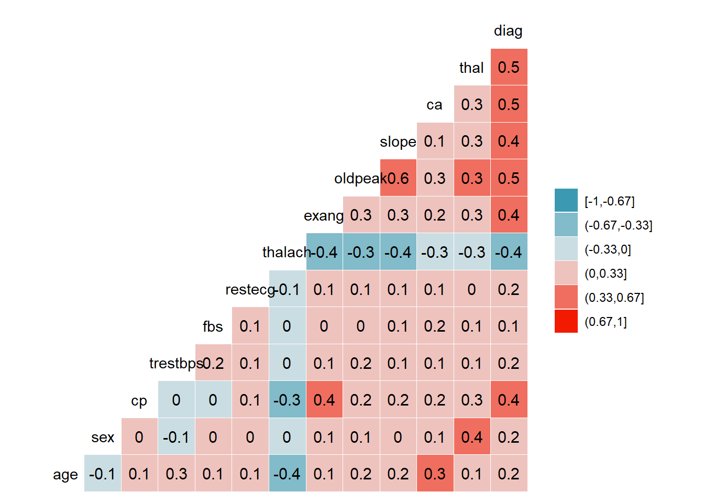
There is strong correlation between-
Diag-thal
Diag- ca
Diag-oldpeak
Diag- exang
ggcorr(HD1$US2, method = c("everything", "pearson"), nbreaks = 6, label = TRUE, label_color = "white")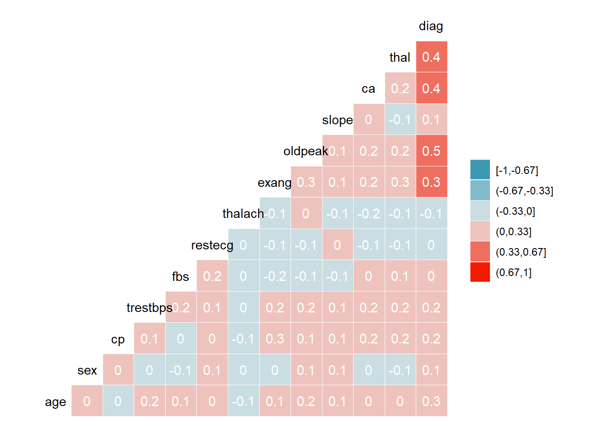
There is strong correlation between-
Diag-thal
Diag-ca
Diag-oldpeak
Diag-exang
Oldpeak-exang
Exang-cp
Thalach-age
ggcorr(HD1$EU1, method = c("everything", "pearson"), nbreaks = 6, label = TRUE, label_color = "white")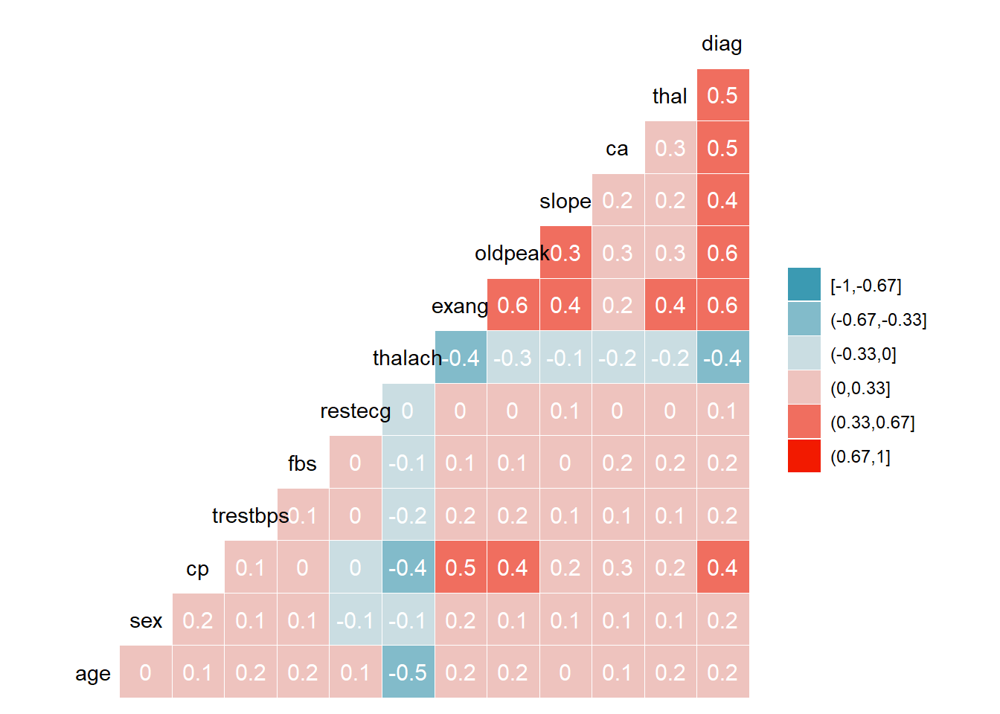
Here the corrolation is bit different from other hospitals
There is strong correlation only between-
Diag-ca
Diag-fbs
#ggpairs(HD1$EU2, upper = list(continuous = wrap("cor", size=2.5))) + theme_bw()
ggcorr(HD1$EU2, method = c("everything", "pearson"), nbreaks = 6, label = TRUE, label_size = 3, label_color = "white")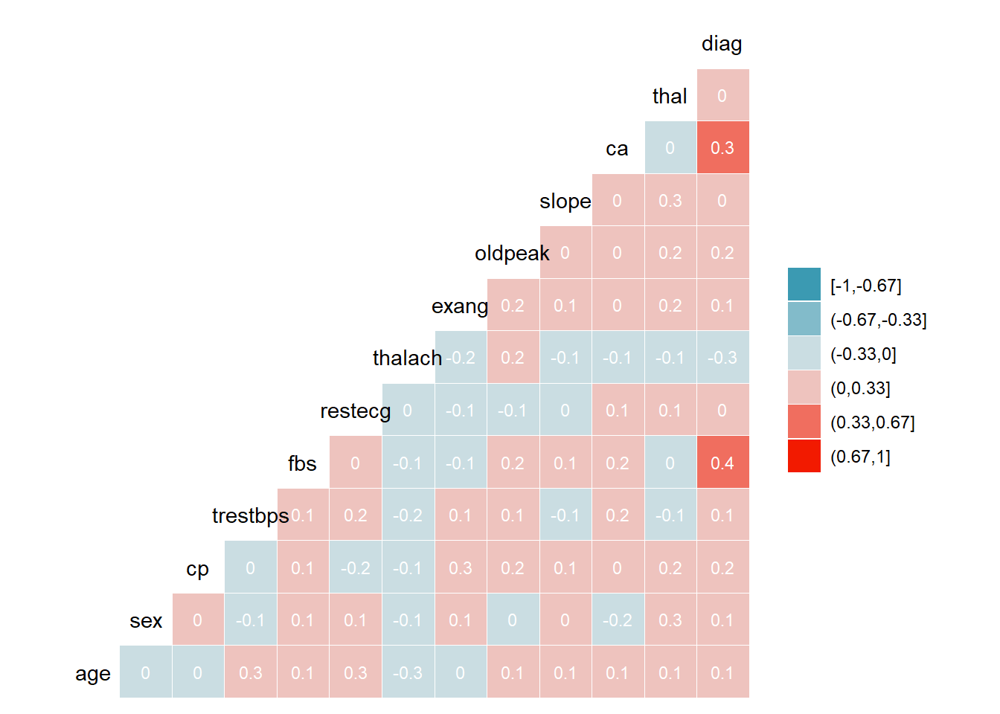
Overall Diag with thal, ca, oldpeak are strongly correlated.
HD1_all<- rbind(HD1$US1,HD1$US2,HD1$EU1,HD1$EU2)
ggcorr(HD1_all, method = c("everything", "pearson"), nbreaks = 6, label = TRUE, label_color = "white")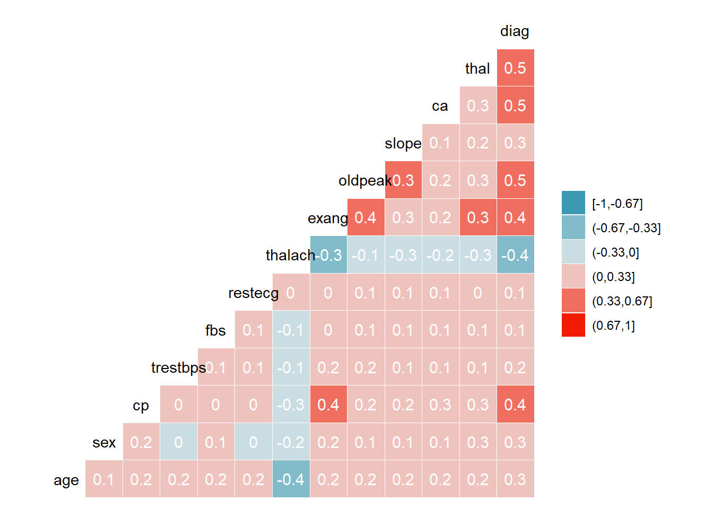
Carried t-test with numeric variables and chisq test with the categorical variable.
Dichotomized the heart diagnosis to present and absent and carried the test. Results show that except in a few hospitals, the majority of them have shown fasting blood sugar, resting ECG are an insignificant test.
Similarity among heart disease patients are:- • Most of them were male.
• Aged between 49 to 60.
• Have asymptomatic chest pain. • The fasting glucose test was irrelevant. • Resting ECG test also seemed insignificant. • Most of them had exercise-induced angina present (absent in non-HD patients ).
• They got ‘Flat’ slope in ST-segment exercises but in a few hospitals, it seemed not significant. (have mixed result of non-HD patient)
• Most of the patients with HD get ‘reversible defect’ in the Thalassemia test.
• Have high blood pressure around (mean)134 bp. Non-HD have lower bp comparatively.
• There mas heart rate achieved on the Thallium stress test is around 127(mean, SD=24.1). It’s usually much lower than non-HD patients. • They have higher results (mean =1.26) in ST depression exercise compared to non-HD patients. It’s usually higher than 1 unit. • Colored vessel by fluoroscopy test is significant, if the patient has heart disease then 70% of the time it will be found through this. Only 30% of heart disease did not have colored vessels in the test.
In US1 hospital patient with heart disease are comparatively older with median age=58, mostly male seems to higher chance in having it, most common chest pain is asymptomatiic (75% common). Most of the time patient tend to have LV hypertrophy 58% or normal ECG 40% in there resting ECG test as result. Exercise Induced Angina is significant but ‘no’, ‘yes’ outcome is similar, 45% and 55% respectively. Cannot predect heart disease through Exercise Induced Angina. In Slope Peak Exercise 65% of them get Flat. 64% of the patiens get reversible defect in Thalassemia test. Mean of Resting_Blood_Pressure is 135 among them. Mean of Max_Heart_Rate_Achieved is 139. Mean of ST depression induced by exercise relative to rest is 1.57.
And patient with no heart disease are younger, have similar distribution in gender, 43% female, 56% male. Most common chesst pain among them is non-aniginal pain. Although atypical and asymptomatic are also seen in them. Patient get normal ECG in there diagnose around 58% of the times. 64% get upsloping in Slope Peak Exercisetest. 79% get normal in Thalassemia test. Mean of Resting_Blood_Pressure is 129 among them. Mean of Max_Heart_Rate_Achieved is 158. Most patients get 0 major vesseled coloured. Mean of ST depression induced by exercise relative to rest is 0.59.
Fasting blood sugar is not a significant measure of heart disease, as p-value>0.05. If the patient have heart disease the Exercise engina test ie not suitable as its outcome is not differential from non heart patient.. Here mostly all the test is recomended here except Fasting blood sugar.
table_names<- HD$US1 %>%
select(Sex,
Chest_Pain_Type,
Fasting_Blood_Sugar,
Resting_ECG,
Exercise_Induced_Angina,
Slope_Peak_Exercise_ST,
Thalassemia,
Age,
Resting_Blood_Pressure,
Max_Heart_Rate_Achieved,
ST_Depression_Exercise,
Num_Major_Vessels,
diag_hd) %>%
mutate(Sex = recode_factor(Sex, `0` = "female",
`1` = "male" ),
Chest_Pain_Type = recode_factor(Chest_Pain_Type, `1` = "typical angina",
`2` = "atypical angina",
`3` = "non-anginal pain",
`4` = "asymptomatic"),
Fasting_Blood_Sugar = recode_factor(Fasting_Blood_Sugar, `0` = "<= 120 mg/dl",
`1` = "> 120 mg/dl"),
Resting_ECG = recode_factor(Resting_ECG, `0` = "normal",
`1` = "ST-T abnormality",
`2` = "LV hypertrophy"),
Exercise_Induced_Angina = recode_factor(Exercise_Induced_Angina, `0` = "no",
`1` = "yes"),
Slope_Peak_Exercise_ST = recode_factor(Slope_Peak_Exercise_ST, `1` = "up sloping",
`2` = "flat",
`3` = "down sloping"),
Thalassemia = recode_factor(Thalassemia, `3` = "normal",
`6` = "fixed defect",
`7` = "reversible defect") ,
diag_hd = ifelse(is.na(diag_hd), NA,
ifelse(diag_hd == 1, "Heart disease",
ifelse(diag_hd == 0, "No Heart disease", "error"))) %>%
factor(levels = c("Heart disease", "No Heart disease", "P-value")))
rndr <- function(x, name, ...) {
if (length(x) == 0) {
y <- table_names[[name]]
s <- rep("", length(render.default(x=y, name=name, ...)))
if (is.numeric(y)) {
p <- t.test(y ~ table_names$diag_hd)$p.value
} else {
p <- chisq.test(table(y, droplevels(table_names$diag_hd)))$p.value
}
s[2] <- sub("<", "<", format.pval(p, digits=3, eps=0.001))
s
} else {
render.default(x=x, name=name, ...)
}
}
rndr.strat <- function(label, n, ...) {
ifelse(n==0, label, render.strat.default(label, n, ...))
}
table1(~ Age+
Sex+
Chest_Pain_Type+
Fasting_Blood_Sugar+
Resting_ECG+
Exercise_Induced_Angina+
Slope_Peak_Exercise_ST+
Thalassemia+
Resting_Blood_Pressure+
Max_Heart_Rate_Achieved+
ST_Depression_Exercise+
Num_Major_Vessels|diag_hd,
data = table_names,
droplevels = F,
render = rndr,
render.strat = rndr.strat,
overall = F)| Heart disease (N=139) |
No Heart disease (N=164) |
P-value | |
|---|---|---|---|
| Age | |||
| Mean (SD) | 56.6 (7.94) | 52.6 (9.51) | <0.001 |
| Median [Min, Max] | 58.0 [35.0, 77.0] | 52.0 [29.0, 76.0] | |
| Sex | |||
| female | 25 (18.0%) | 72 (43.9%) | <0.001 |
| male | 114 (82.0%) | 92 (56.1%) | |
| Chest_Pain_Type | |||
| typical angina | 7 (5.0%) | 16 (9.8%) | <0.001 |
| atypical angina | 9 (6.5%) | 41 (25.0%) | |
| non-anginal pain | 18 (12.9%) | 68 (41.5%) | |
| asymptomatic | 105 (75.5%) | 39 (23.8%) | |
| Fasting_Blood_Sugar | |||
| <= 120 mg/dl | 117 (84.2%) | 141 (86.0%) | 0.781 |
| > 120 mg/dl | 22 (15.8%) | 23 (14.0%) | |
| Resting_ECG | |||
| normal | 56 (40.3%) | 95 (57.9%) | 0.007 |
| ST-T abnormality | 3 (2.2%) | 1 (0.6%) | |
| LV hypertrophy | 80 (57.6%) | 68 (41.5%) | |
| Exercise_Induced_Angina | |||
| no | 63 (45.3%) | 141 (86.0%) | <0.001 |
| yes | 76 (54.7%) | 23 (14.0%) | |
| Slope_Peak_Exercise_ST | |||
| up sloping | 36 (25.9%) | 106 (64.6%) | <0.001 |
| flat | 91 (65.5%) | 49 (29.9%) | |
| down sloping | 12 (8.6%) | 9 (5.5%) | |
| Thalassemia | |||
| normal | 37 (26.6%) | 130 (79.3%) | <0.001 |
| fixed defect | 13 (9.4%) | 6 (3.7%) | |
| reversible defect | 89 (64.0%) | 28 (17.1%) | |
| Resting_Blood_Pressure | |||
| Mean (SD) | 135 (18.8) | 129 (16.2) | 0.009 |
| Median [Min, Max] | 130 [100, 200] | 130 [94.0, 180] | |
| Max_Heart_Rate_Achieved | |||
| Mean (SD) | 139 (22.6) | 158 (19.2) | <0.001 |
| Median [Min, Max] | 142 [71.0, 195] | 161 [96.0, 202] | |
| ST_Depression_Exercise | |||
| Mean (SD) | 1.57 (1.30) | 0.587 (0.782) | <0.001 |
| Median [Min, Max] | 1.40 [0, 6.20] | 0.200 [0, 4.20] | |
| Num_Major_Vessels | |||
| 0 | 46 (33.1%) | 133 (81.1%) | <0.001 |
| 1 | 44 (31.7%) | 21 (12.8%) | |
| 2 | 31 (22.3%) | 7 (4.3%) | |
| 3 | 18 (12.9%) | 3 (1.8%) |
For patients in hospital US2 with heart diesease tend to be older having mean of 60 years old, who are mostly male. The most common chest pain among them is asymptomatic 72% of then have it. Exercise induced angina is present among most of them. 71% of then have reversible defect in Thalassemia test. There mean Resting Blood Pressure is 134. Mean of ST depression induced by exercise relative to rest is 1.43.
Test like chest pain, exercise induced angina, Thalassemia, (Oldpeak)= ST depression induced by exercise are fesible to test and predict heart disease.
Here Gender, Fasting Blood Sugar test, Resting ECG, Exercise ST segment, Thalach test(Thallium stress test) are not significant in this model.
table_names<- HD$US2 %>%
select(Sex,
Chest_Pain_Type,
Fasting_Blood_Sugar,
Resting_ECG,
Exercise_Induced_Angina,
Slope_Peak_Exercise_ST,
Thalassemia,
Age,
Resting_Blood_Pressure,
Max_Heart_Rate_Achieved,
ST_Depression_Exercise,
Num_Major_Vessels,
diag_hd) %>%
mutate(Sex = recode_factor(Sex, `0` = "female",
`1` = "male" ),
Chest_Pain_Type = recode_factor(Chest_Pain_Type, `1` = "typical angina",
`2` = "atypical angina",
`3` = "non-anginal pain",
`4` = "asymptomatic"),
Fasting_Blood_Sugar = recode_factor(Fasting_Blood_Sugar, `0` = "<= 120 mg/dl",
`1` = "> 120 mg/dl"),
Resting_ECG = recode_factor(Resting_ECG, `0` = "normal",
`1` = "ST-T abnormality",
`2` = "LV hypertrophy"),
Exercise_Induced_Angina = recode_factor(Exercise_Induced_Angina, `0` = "no",
`1` = "yes"),
Slope_Peak_Exercise_ST = recode_factor(Slope_Peak_Exercise_ST, `1` = "up sloping",
`2` = "flat",
`3` = "down sloping"),
Thalassemia = recode_factor(Thalassemia, `3` = "normal",
`6` = "fixed defect",
`7` = "reversible defect") ,
diag_hd = ifelse(is.na(diag_hd), NA,
ifelse(diag_hd == 1, "Heart disease",
ifelse(diag_hd == 0, "No Heart disease", "error"))) %>%
factor(levels = c("Heart disease", "No Heart disease", "P-value")))
table1(~ Age+
Sex+
Chest_Pain_Type+
Fasting_Blood_Sugar+
Resting_ECG+
Exercise_Induced_Angina+
Slope_Peak_Exercise_ST+
Thalassemia+
Resting_Blood_Pressure+
Max_Heart_Rate_Achieved+
ST_Depression_Exercise+
Num_Major_Vessels|diag_hd,
data = table_names,
droplevels = F,
render = rndr,
render.strat = rndr.strat,
overall = F)| Heart disease (N=149) |
No Heart disease (N=51) |
P-value | |
|---|---|---|---|
| Age | |||
| Mean (SD) | 60.2 (7.17) | 56.8 (9.05) | 0.018 |
| Median [Min, Max] | 60.0 [38.0, 77.0] | 58.0 [35.0, 75.0] | |
| Sex | |||
| female | 3 (2.0%) | 3 (5.9%) | 0.356 |
| male | 146 (98.0%) | 48 (94.1%) | |
| Chest_Pain_Type | |||
| typical angina | 5 (3.4%) | 3 (5.9%) | <0.001 |
| atypical angina | 5 (3.4%) | 9 (17.6%) | |
| non-anginal pain | 31 (20.8%) | 16 (31.4%) | |
| asymptomatic | 108 (72.5%) | 23 (45.1%) | |
| Fasting_Blood_Sugar | |||
| <= 120 mg/dl | 95 (63.8%) | 37 (72.5%) | 0.331 |
| > 120 mg/dl | 54 (36.2%) | 14 (27.5%) | |
| Resting_ECG | |||
| normal | 62 (41.6%) | 18 (35.3%) | 0.699 |
| ST-T abnormality | 68 (45.6%) | 25 (49.0%) | |
| LV hypertrophy | 19 (12.8%) | 8 (15.7%) | |
| Exercise_Induced_Angina | |||
| no | 41 (27.5%) | 33 (64.7%) | <0.001 |
| yes | 108 (72.5%) | 18 (35.3%) | |
| Slope_Peak_Exercise_ST | |||
| up sloping | 29 (19.5%) | 7 (13.7%) | 0.337 |
| flat | 73 (49.0%) | 31 (60.8%) | |
| down sloping | 47 (31.5%) | 13 (25.5%) | |
| Thalassemia | |||
| normal | 28 (18.8%) | 34 (66.7%) | <0.001 |
| fixed defect | 15 (10.1%) | 5 (9.8%) | |
| reversible defect | 106 (71.1%) | 12 (23.5%) | |
| Resting_Blood_Pressure | |||
| Mean (SD) | 134 (21.7) | 128 (17.0) | 0.035 |
| Median [Min, Max] | 130 [0, 190] | 126 [100, 180] | |
| Max_Heart_Rate_Achieved | |||
| Mean (SD) | 121 (20.4) | 125 (27.5) | 0.358 |
| Median [Min, Max] | 120 [73.0, 180] | 120 [69.0, 180] | |
| ST_Depression_Exercise | |||
| Mean (SD) | 1.43 (1.09) | 0.594 (0.891) | <0.001 |
| Median [Min, Max] | 1.50 [0, 4.00] | 0 [-0.500, 3.00] | |
| Num_Major_Vessels | |||
| 0 | 52 (34.9%) | 42 (82.4%) | <0.001 |
| 1 | 44 (29.5%) | 3 (5.9%) | |
| 2 | 33 (22.1%) | 2 (3.9%) | |
| 3 | 20 (13.4%) | 4 (7.8%) |
In EU1 hospital middle aged men tend to get heart disease. Popular chest pain in asymptomatic around 78% of them have it. Most of them do not ave diabetes. Have excercise induced angina. In ST segment exsrcise most of them get Flat slope. Have reversible defect in Thalassemia test. Have normal blood pressure. Max_Heart_Rate_Achieved from thallium stress test is 129. Patient with no heart disease have higher value of 145.ST depression induced exercise test gives a mean of 1.25.
Patients withou heart disease get zero magor vessel colored by flourosopy test, have 0.21 in STdepression exercise test. Have higher heart rate in thallium stress test
Here only Resting ECG test seems insignificant.
table_names<- HD$EU1 %>%
select(Sex,
Chest_Pain_Type,
Fasting_Blood_Sugar,
Resting_ECG,
Exercise_Induced_Angina,
Slope_Peak_Exercise_ST,
Thalassemia,
Age,
Resting_Blood_Pressure,
Max_Heart_Rate_Achieved,
ST_Depression_Exercise,
Num_Major_Vessels,
diag_hd) %>%
mutate(Sex = recode_factor(Sex, `0` = "female",
`1` = "male" ),
Chest_Pain_Type = recode_factor(Chest_Pain_Type, `1` = "typical angina",
`2` = "atypical angina",
`3` = "non-anginal pain",
`4` = "asymptomatic"),
Fasting_Blood_Sugar = recode_factor(Fasting_Blood_Sugar, `0` = "<= 120 mg/dl",
`1` = "> 120 mg/dl"),
Resting_ECG = recode_factor(Resting_ECG, `0` = "normal",
`1` = "ST-T abnormality",
`2` = "LV hypertrophy"),
Exercise_Induced_Angina = recode_factor(Exercise_Induced_Angina, `0` = "no",
`1` = "yes"),
Slope_Peak_Exercise_ST = recode_factor(Slope_Peak_Exercise_ST, `1` = "up sloping",
`2` = "flat",
`3` = "down sloping"),
Thalassemia = recode_factor(Thalassemia, `3` = "normal",
`6` = "fixed defect",
`7` = "reversible defect") ,
diag_hd = ifelse(is.na(diag_hd), NA,
ifelse(diag_hd == 1, "Heart disease",
ifelse(diag_hd == 0, "No Heart disease", "error"))) %>%
factor(levels = c("Heart disease", "No Heart disease", "P-value")))
table1(~ Age+
Sex+
Chest_Pain_Type+
Fasting_Blood_Sugar+
Resting_ECG+
Exercise_Induced_Angina+
Slope_Peak_Exercise_ST+
Thalassemia+
Resting_Blood_Pressure+
Max_Heart_Rate_Achieved+
ST_Depression_Exercise+
Num_Major_Vessels|diag_hd,
data = table_names,
droplevels = F,
render = rndr,
render.strat = rndr.strat,
overall = F)| Heart disease (N=106) |
No Heart disease (N=188) |
P-value | |
|---|---|---|---|
| Age | |||
| Mean (SD) | 49.5 (7.49) | 46.9 (7.85) | 0.006 |
| Median [Min, Max] | 50.0 [31.0, 66.0] | 48.0 [28.0, 62.0] | |
| Sex | |||
| female | 12 (11.3%) | 69 (36.7%) | <0.001 |
| male | 94 (88.7%) | 119 (63.3%) | |
| Chest_Pain_Type | |||
| typical angina | 4 (3.8%) | 7 (3.7%) | <0.001 |
| atypical angina | 8 (7.5%) | 98 (52.1%) | |
| non-anginal pain | 11 (10.4%) | 43 (22.9%) | |
| asymptomatic | 83 (78.3%) | 40 (21.3%) | |
| Fasting_Blood_Sugar | |||
| <= 120 mg/dl | 92 (86.8%) | 181 (96.3%) | 0.005 |
| > 120 mg/dl | 14 (13.2%) | 7 (3.7%) | |
| Resting_ECG | |||
| normal | 85 (80.2%) | 150 (79.8%) | 0.593 |
| ST-T abnormality | 20 (18.9%) | 33 (17.6%) | |
| LV hypertrophy | 1 (0.9%) | 5 (2.7%) | |
| Exercise_Induced_Angina | |||
| no | 36 (34.0%) | 169 (89.9%) | <0.001 |
| yes | 70 (66.0%) | 19 (10.1%) | |
| Slope_Peak_Exercise_ST | |||
| up sloping | 9 (8.5%) | 107 (56.9%) | <0.001 |
| flat | 94 (88.7%) | 77 (41.0%) | |
| down sloping | 3 (2.8%) | 4 (2.1%) | |
| Thalassemia | |||
| normal | 26 (24.5%) | 147 (78.2%) | <0.001 |
| fixed defect | 16 (15.1%) | 10 (5.3%) | |
| reversible defect | 64 (60.4%) | 31 (16.5%) | |
| Resting_Blood_Pressure | |||
| Mean (SD) | 136 (18.7) | 131 (16.7) | 0.022 |
| Median [Min, Max] | 135 [92.0, 200] | 130 [98.0, 190] | |
| Max_Heart_Rate_Achieved | |||
| Mean (SD) | 129 (22.6) | 145 (22.2) | <0.001 |
| Median [Min, Max] | 129 [82.0, 180] | 144 [90.0, 190] | |
| ST_Depression_Exercise | |||
| Mean (SD) | 1.25 (1.05) | 0.214 (0.534) | <0.001 |
| Median [Min, Max] | 1.00 [0, 5.00] | 0 [0, 3.00] | |
| Num_Major_Vessels | |||
| 0 | 40 (37.7%) | 146 (77.7%) | <0.001 |
| 1 | 29 (27.4%) | 29 (15.4%) | |
| 2 | 17 (16.0%) | 11 (5.9%) | |
| 3 | 20 (18.9%) | 2 (1.1%) |
Here Fasting blood sugar, Resting ECG, Exercise induced angina, St segment slope peak exercise, Thalassemia, Resting Blood pressure measure, Thallium stress test, ST Depression Exercise all these test seems insignificant here.
Only few test like chest pain, Number of major vessels (0-3) colored by flourosopy are signiifcant.
table_names<- HD$EU2 %>%
select(Sex,
Chest_Pain_Type,
Fasting_Blood_Sugar,
Resting_ECG,
Exercise_Induced_Angina,
Slope_Peak_Exercise_ST,
Thalassemia,
Age,
Resting_Blood_Pressure,
Max_Heart_Rate_Achieved,
ST_Depression_Exercise,
Num_Major_Vessels,
diag_hd) %>%
mutate(Sex = recode_factor(Sex, `0` = "female",
`1` = "male" ),
Chest_Pain_Type = recode_factor(Chest_Pain_Type, `1` = "typical angina",
`2` = "atypical angina",
`3` = "non-anginal pain",
`4` = "asymptomatic"),
Fasting_Blood_Sugar = recode_factor(Fasting_Blood_Sugar, `0` = "<= 120 mg/dl",
`1` = "> 120 mg/dl"),
Resting_ECG = recode_factor(Resting_ECG, `0` = "normal",
`1` = "ST-T abnormality",
`2` = "LV hypertrophy"),
Exercise_Induced_Angina = recode_factor(Exercise_Induced_Angina, `0` = "no",
`1` = "yes"),
Slope_Peak_Exercise_ST = recode_factor(Slope_Peak_Exercise_ST, `1` = "up sloping",
`2` = "flat",
`3` = "down sloping"),
Thalassemia = recode_factor(Thalassemia, `3` = "normal",
`6` = "fixed defect",
`7` = "reversible defect") ,
diag_hd = ifelse(is.na(diag_hd), NA,
ifelse(diag_hd == 1, "Heart disease",
ifelse(diag_hd == 0, "No Heart disease", "error"))) %>%
factor(levels = c("Heart disease", "No Heart disease", "P-value")))
table1(~ Age+
Sex+
Chest_Pain_Type+
Fasting_Blood_Sugar+
Resting_ECG+
Exercise_Induced_Angina+
Slope_Peak_Exercise_ST+
Thalassemia+
Resting_Blood_Pressure+
Max_Heart_Rate_Achieved+
ST_Depression_Exercise+
Num_Major_Vessels|diag_hd,
data = table_names,
droplevels = F,
render = rndr,
render.strat = rndr.strat,
overall = F)| Heart disease (N=115) |
No Heart disease (N=8) |
P-value | |
|---|---|---|---|
| Age | |||
| Mean (SD) | 55.4 (8.97) | 54.6 (10.6) | 0.852 |
| Median [Min, Max] | 57.0 [32.0, 74.0] | 54.0 [38.0, 72.0] | |
| Sex | |||
| female | 10 (8.7%) | 0 (0%) | 0.841 |
| male | 105 (91.3%) | 8 (100%) | |
| Chest_Pain_Type | |||
| typical angina | 4 (3.5%) | 0 (0%) | <0.001 |
| atypical angina | 2 (1.7%) | 2 (25.0%) | |
| non-anginal pain | 13 (11.3%) | 4 (50.0%) | |
| asymptomatic | 96 (83.5%) | 2 (25.0%) | |
| Fasting_Blood_Sugar | |||
| <= 120 mg/dl | 101 (87.8%) | 8 (100%) | 0.636 |
| > 120 mg/dl | 14 (12.2%) | 0 (0%) | |
| Resting_ECG | |||
| normal | 81 (70.4%) | 5 (62.5%) | 0.682 |
| ST-T abnormality | 28 (24.3%) | 2 (25.0%) | |
| LV hypertrophy | 6 (5.2%) | 1 (12.5%) | |
| Exercise_Induced_Angina | |||
| no | 62 (53.9%) | 7 (87.5%) | 0.138 |
| yes | 53 (46.1%) | 1 (12.5%) | |
| Slope_Peak_Exercise_ST | |||
| up sloping | 35 (30.4%) | 4 (50.0%) | 0.171 |
| flat | 67 (58.3%) | 2 (25.0%) | |
| down sloping | 13 (11.3%) | 2 (25.0%) | |
| Thalassemia | |||
| normal | 30 (26.1%) | 3 (37.5%) | 0.406 |
| fixed defect | 20 (17.4%) | 0 (0%) | |
| reversible defect | 65 (56.5%) | 5 (62.5%) | |
| Resting_Blood_Pressure | |||
| Mean (SD) | 131 (22.2) | 124 (27.4) | 0.537 |
| Median [Min, Max] | 125 [95.0, 200] | 125 [80.0, 160] | |
| Max_Heart_Rate_Achieved | |||
| Mean (SD) | 120 (26.1) | 137 (25.8) | 0.117 |
| Median [Min, Max] | 120 [60.0, 182] | 140 [97.0, 179] | |
| ST_Depression_Exercise | |||
| Mean (SD) | 0.655 (1.07) | 0.538 (1.00) | 0.758 |
| Median [Min, Max] | 0.300 [-2.60, 3.70] | 0.450 [-1.10, 2.00] | |
| Num_Major_Vessels | |||
| 0 | 35 (30.4%) | 6 (75.0%) | 0.078 |
| 1 | 40 (34.8%) | 1 (12.5%) | |
| 2 | 30 (26.1%) | 1 (12.5%) | |
| 3 | 10 (8.7%) | 0 (0%) |
Overall all the test seems significant.
table_names<- HD_all %>%
select(Sex,
Chest_Pain_Type,
Fasting_Blood_Sugar,
Resting_ECG,
Exercise_Induced_Angina,
Slope_Peak_Exercise_ST,
Thalassemia,
Age,
Resting_Blood_Pressure,
Max_Heart_Rate_Achieved,
ST_Depression_Exercise,
Num_Major_Vessels,
diag_hd) %>%
mutate(Sex = recode_factor(Sex, `0` = "female",
`1` = "male" ),
Chest_Pain_Type = recode_factor(Chest_Pain_Type, `1` = "typical angina",
`2` = "atypical angina",
`3` = "non-anginal pain",
`4` = "asymptomatic"),
Fasting_Blood_Sugar = recode_factor(Fasting_Blood_Sugar, `0` = "<= 120 mg/dl",
`1` = "> 120 mg/dl"),
Resting_ECG = recode_factor(Resting_ECG, `0` = "normal",
`1` = "ST-T abnormality",
`2` = "LV hypertrophy"),
Exercise_Induced_Angina = recode_factor(Exercise_Induced_Angina, `0` = "no",
`1` = "yes"),
Slope_Peak_Exercise_ST = recode_factor(Slope_Peak_Exercise_ST, `1` = "up sloping",
`2` = "flat",
`3` = "down sloping"),
Thalassemia = recode_factor(Thalassemia, `3` = "normal",
`6` = "fixed defect",
`7` = "reversible defect") ,
diag_hd = ifelse(is.na(diag_hd), NA,
ifelse(diag_hd == 1, "Heart disease",
ifelse(diag_hd == 0, "No Heart disease", "error"))) %>%
factor(levels = c("Heart disease", "No Heart disease", "P-value")))
table1(~ Age+
Sex+
Chest_Pain_Type+
Fasting_Blood_Sugar+
Resting_ECG+
Exercise_Induced_Angina+
Slope_Peak_Exercise_ST+
Thalassemia+
Resting_Blood_Pressure+
Max_Heart_Rate_Achieved+
ST_Depression_Exercise+
Num_Major_Vessels|diag_hd,
data = table_names,
droplevels = F,
render = rndr,
render.strat = rndr.strat,
overall = F)| Heart disease (N=509) |
No Heart disease (N=411) |
P-value | |
|---|---|---|---|
| Age | |||
| Mean (SD) | 55.9 (8.72) | 50.5 (9.43) | <0.001 |
| Median [Min, Max] | 57.0 [31.0, 77.0] | 51.0 [28.0, 76.0] | |
| Sex | |||
| female | 50 (9.8%) | 144 (35.0%) | <0.001 |
| male | 459 (90.2%) | 267 (65.0%) | |
| Chest_Pain_Type | |||
| typical angina | 20 (3.9%) | 26 (6.3%) | <0.001 |
| atypical angina | 24 (4.7%) | 150 (36.5%) | |
| non-anginal pain | 73 (14.3%) | 131 (31.9%) | |
| asymptomatic | 392 (77.0%) | 104 (25.3%) | |
| Fasting_Blood_Sugar | |||
| <= 120 mg/dl | 405 (79.6%) | 367 (89.3%) | <0.001 |
| > 120 mg/dl | 104 (20.4%) | 44 (10.7%) | |
| Resting_ECG | |||
| normal | 284 (55.8%) | 268 (65.2%) | 0.003 |
| ST-T abnormality | 119 (23.4%) | 61 (14.8%) | |
| LV hypertrophy | 106 (20.8%) | 82 (20.0%) | |
| Exercise_Induced_Angina | |||
| no | 202 (39.7%) | 350 (85.2%) | <0.001 |
| yes | 307 (60.3%) | 61 (14.8%) | |
| Slope_Peak_Exercise_ST | |||
| up sloping | 109 (21.4%) | 224 (54.5%) | <0.001 |
| flat | 325 (63.9%) | 159 (38.7%) | |
| down sloping | 75 (14.7%) | 28 (6.8%) | |
| Thalassemia | |||
| normal | 121 (23.8%) | 314 (76.4%) | <0.001 |
| fixed defect | 64 (12.6%) | 21 (5.1%) | |
| reversible defect | 324 (63.7%) | 76 (18.5%) | |
| Resting_Blood_Pressure | |||
| Mean (SD) | 134 (20.5) | 130 (16.8) | <0.001 |
| Median [Min, Max] | 130 [0, 200] | 130 [80.0, 190] | |
| Max_Heart_Rate_Achieved | |||
| Mean (SD) | 127 (24.1) | 148 (24.3) | <0.001 |
| Median [Min, Max] | 127 [60.0, 195] | 150 [69.0, 202] | |
| ST_Depression_Exercise | |||
| Mean (SD) | 1.26 (1.19) | 0.416 (0.722) | <0.001 |
| Median [Min, Max] | 1.00 [-2.60, 6.20] | 0 [-1.10, 4.20] | |
| Num_Major_Vessels | |||
| 0 | 173 (34.0%) | 327 (79.6%) | <0.001 |
| 1 | 157 (30.8%) | 54 (13.1%) | |
| 2 | 111 (21.8%) | 21 (5.1%) | |
| 3 | 68 (13.4%) | 9 (2.2%) |
Mostly all heart disease patient have as asymptomatic chest pain. Most patient have HD have ecercise induced angina. Most people with HD have flat response in ST segment exercise. ECG is normal in most HD patients.
# graphicar representation of there association.
hd_long_fact_tbl <- HD$US1 %>%
select(Sex,
Chest_Pain_Type,
Fasting_Blood_Sugar ,
Resting_ECG,
Exercise_Induced_Angina,
Slope_Peak_Exercise_ST,
Thalassemia,Num_Major_Vessels,
diag_hd) %>%
mutate( Sex = recode_factor(Sex, `0` = "female",
`1` = "male" ),
Chest_Pain_Type = recode_factor(Chest_Pain_Type, `1` = "typical",
`2` = "atypical",
`3` = "non-anginal",
`4` = "asymptomatic"),
Fasting_Blood_Sugar = recode_factor(Fasting_Blood_Sugar, `0` = "<= 120 mg/dl",
`1` = "> 120 mg/dl"),
Resting_ECG = recode_factor(Resting_ECG, `0` = "normal",
`1` = "ST-T abnormality",
`2` = "LV hypertrophy"),
Exercise_Induced_Angina = recode_factor(Exercise_Induced_Angina, `0` = "no",
`1` = "yes"),
Slope_Peak_Exercise_ST = recode_factor(Slope_Peak_Exercise_ST, `1` = "up sloping",
`2` = "flat",
`3` = "down sloping"),
Thalassemia = recode_factor(Thalassemia, `3` = "normal",
`6` = "fixed defect",
`7` = "reversible defect")) %>%
gather(key = "key", value = "value", -diag_hd)
#Visualize with bar plot
hd_long_fact_tbl %>%
ggplot(aes(value)) +
geom_bar(aes(x = value,
fill = diag_hd),
alpha = .6,
position = "dodge",
color = "black",
width = .8
) +
labs(x = "",
y = "",
title = "Scaled Effect of Categorical Variables") +
theme(
axis.text.y = element_blank(),
axis.ticks.y = element_blank()) +
facet_wrap(~ key, scales = "free", nrow = 5) +
scale_fill_manual(
values = c("yellow2", "firebrick1"),
name = "Heart\nDisease",
labels = c("No HD", "Yes HD"))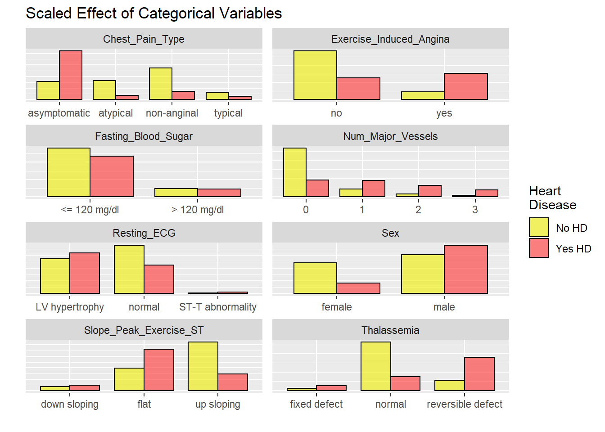
hd_long_cont_tbl <- HD$US1 %>%
select(Age,
Resting_Blood_Pressure,
Max_Heart_Rate_Achieved,
ST_Depression_Exercise,
#Num_Major_Vessels,
diag_hd) %>%
gather(key = "key",
value = "value",
-diag_hd)
#Visualize numeric variables as boxplots
h<-hd_long_cont_tbl %>%
ggplot(aes(y = value)) +
geom_histogram(aes(fill = diag_hd),
alpha = .6) +
labs(x = "",
y = "",
title = "Boxplots for Numeric Variables") +
scale_fill_manual(
values = c("yellow2", "springgreen3"),
name = "Heart\nDisease",
labels = c("No HD", "Yes HD")) +
theme() +
facet_wrap( ~ key ,
scales = "free",
ncol = 2)
h +coord_flip()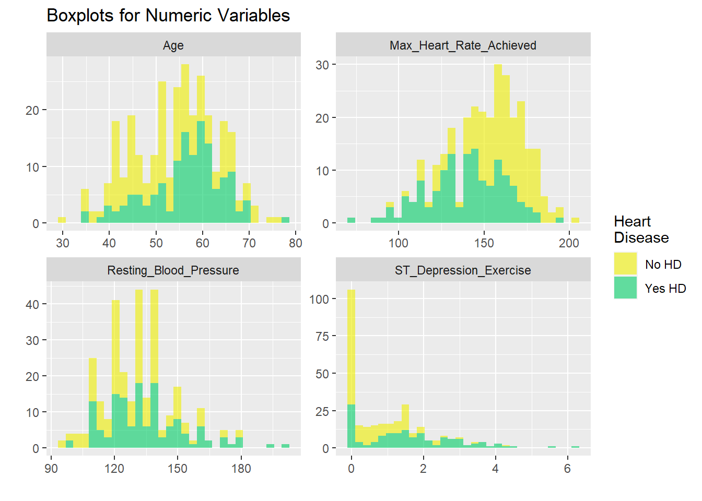 DGGRGWRGWGWRGV GRWGRWG
# graphicar representation of there association.
# graphicar representation of there association.
hd_long_fact_tbl <- HD$US2 %>%
select(Sex,
Chest_Pain_Type,
Fasting_Blood_Sugar,
Resting_ECG,
Exercise_Induced_Angina,
Slope_Peak_Exercise_ST,
Thalassemia,
Num_Major_Vessels,
diag_hd) %>%
mutate(Sex = recode_factor(Sex, `0` = "female",
`1` = "male" ),
Chest_Pain_Type = recode_factor(Chest_Pain_Type, `1` = "typical ",
`2` = "atypical ",
`3` = "non-anginal ",
`4` = "asymptomatic"),
Fasting_Blood_Sugar = recode_factor(Fasting_Blood_Sugar, `0` = "<= 120 mg/dl",
`1` = "> 120 mg/dl"),
Resting_ECG = recode_factor(Resting_ECG, `0` = "normal",
`1` = "ST-T abnormality",
`2` = "LV hypertrophy"),
Exercise_Induced_Angina = recode_factor(Exercise_Induced_Angina, `0` = "no",
`1` = "yes"),
Slope_Peak_Exercise_ST= recode_factor(Slope_Peak_Exercise_ST, `1` = "up sloping",
`2` = "flat",
`3` = "down sloping"),
Thalassemia = recode_factor(Thalassemia, `3` = "normal",
`6` = "fixed defect",
`7` = "reversible defect")) %>%
gather(key = "key", value = "value", -diag_hd)
#Visualize with bar plot
hd_long_fact_tbl %>%
ggplot(aes(value)) +
geom_bar(aes(x = value,
fill = diag_hd),
alpha = .6,
position = "dodge",
color = "black",
width = .8
) +
labs(x = "",
y = "",
title = "Scaled Effect of Categorical Variables") +
theme(
axis.text.y = element_blank(),
axis.ticks.y = element_blank()) +
facet_wrap(~ key, scales = "free", nrow = 4) +
scale_fill_manual(
values = c("yellow2", "firebrick1"),
name = "Heart\nDisease",
labels = c("No HD", "Yes HD"))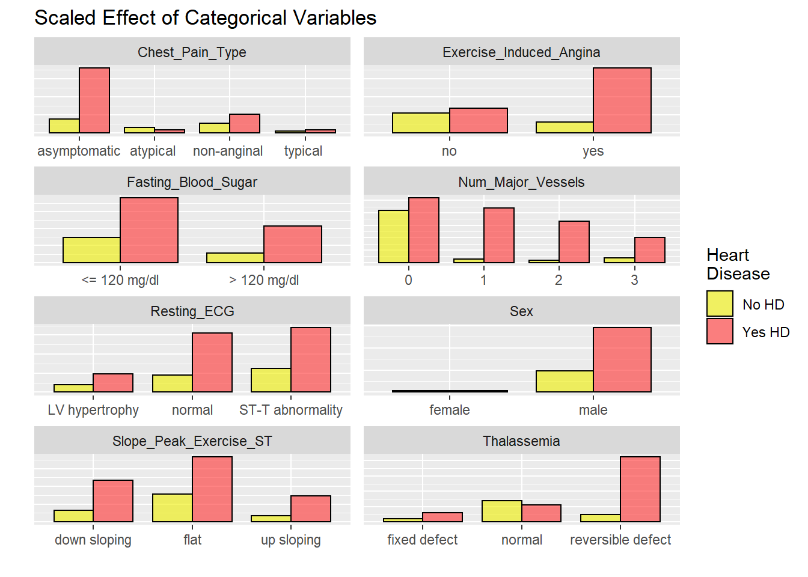
hd_long_cont_tbl <- HD$US2 %>%
select(Age,
Resting_Blood_Pressure,
Max_Heart_Rate_Achieved,
ST_Depression_Exercise,
# Num_Major_Vessels,
diag_hd) %>%
gather(key = "key",
value = "value",
-diag_hd)
#Visualize numeric variables as boxplots
h<-hd_long_cont_tbl %>%
ggplot(aes(y = value)) +
geom_histogram(aes(fill = diag_hd),
alpha = .6) +
labs(x = "",
y = "",
title = "Boxplots for Numeric Variables") +
scale_fill_manual(
values = c("yellow2", "springgreen3"),
name = "Heart\nDisease",
labels = c("No HD", "Yes HD")) +
theme() +
facet_wrap( ~ key ,
scales = "free",
ncol = 2)
h +coord_flip()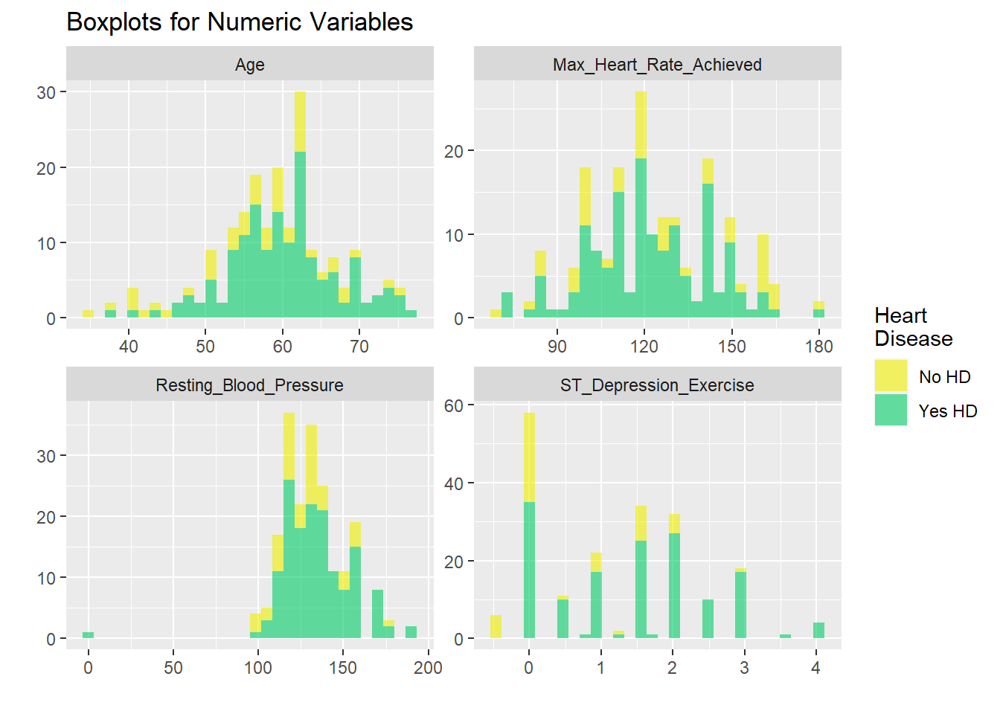
# graphicar representation of there association.
# graphicar representation of there association.
hd_long_fact_tbl <- HD$EU1 %>%
select(Sex,
Chest_Pain_Type,
Fasting_Blood_Sugar,
Resting_ECG,
Exercise_Induced_Angina,
Slope_Peak_Exercise_ST,
Thalassemia,
Num_Major_Vessels,
diag_hd) %>%
#rename(Resting_ECG...x=Resting_ECG)%>%
mutate(Sex = recode_factor(Sex, `0` = "female",
`1` = "male" ),
Chest_Pain_Type = recode_factor(Chest_Pain_Type, `1` = "typical ",
`2` = "atypical ",
`3` = "non-anginal ",
`4` = "asymptomatic"),
Fasting_Blood_Sugar = recode_factor(Fasting_Blood_Sugar, `0` = "<= 120 mg/dl",
`1` = "> 120 mg/dl"),
Resting_ECG = recode_factor(Resting_ECG, `0` = "normal",
`1` = "ST-T abnormality",
`2` = "LV hypertrophy"),
Exercise_Induced_Angina = recode_factor(Exercise_Induced_Angina, `0` = "no",
`1` = "yes"),
Slope_Peak_Exercise_ST = recode_factor(Slope_Peak_Exercise_ST, `1` = "up sloping",
`2` = "flat",
`3` = "down sloping"),
Thalassemia = recode_factor(Thalassemia, `3` = "normal",
`6` = "fixed defect",
`7` = "reversible defect")) %>%
gather(key = "key", value = "value", -diag_hd)
#Visualize with bar plot
hd_long_fact_tbl %>%
ggplot(aes(value)) +
geom_bar(aes(x = value,
fill = diag_hd),
alpha = .6,
position = "dodge",
color = "black",
width = .8
) +
labs(x = "",
y = "",
title = "Scaled Effect of Categorical Variables") +
theme(
axis.text.y = element_blank(),
axis.ticks.y = element_blank()) +
facet_wrap(~ key, scales = "free", nrow = 4) +
scale_fill_manual(
values = c("yellow2", "firebrick1"),
name = "Heart\nDisease",
labels = c("No HD", "Yes HD"))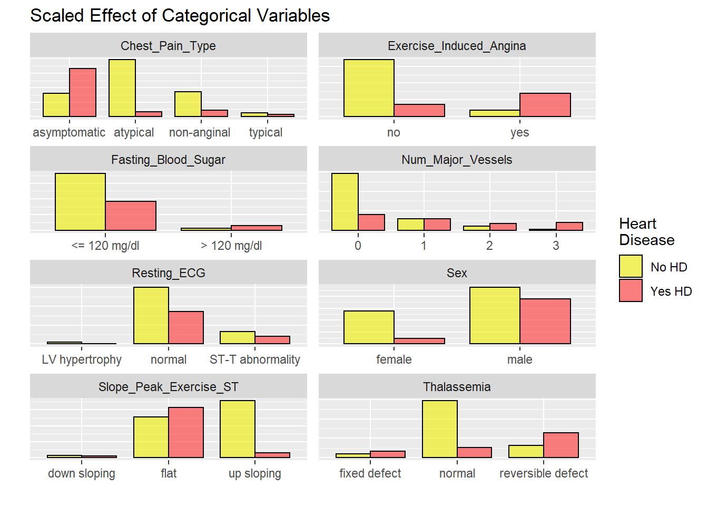
hd_long_cont_tbl <- HD$EU1 %>%
select(Age,
Resting_Blood_Pressure,
Max_Heart_Rate_Achieved,
ST_Depression_Exercise,
# Num_Major_Vessels,
diag_hd) %>%
gather(key = "key",
value = "value",
-diag_hd)
#Visualize numeric variables as boxplots
h<-hd_long_cont_tbl %>%
ggplot(aes(y = value)) +
geom_histogram(aes(fill = diag_hd),
alpha = .6) +
labs(x = "",
y = "",
title = "Boxplots for Numeric Variables") +
scale_fill_manual(
values = c("yellow2", "springgreen3"),
name = "Heart\nDisease",
labels = c("No HD", "Yes HD")) +
theme() +
facet_wrap( ~ key ,
scales = "free",
ncol = 2)
h +coord_flip()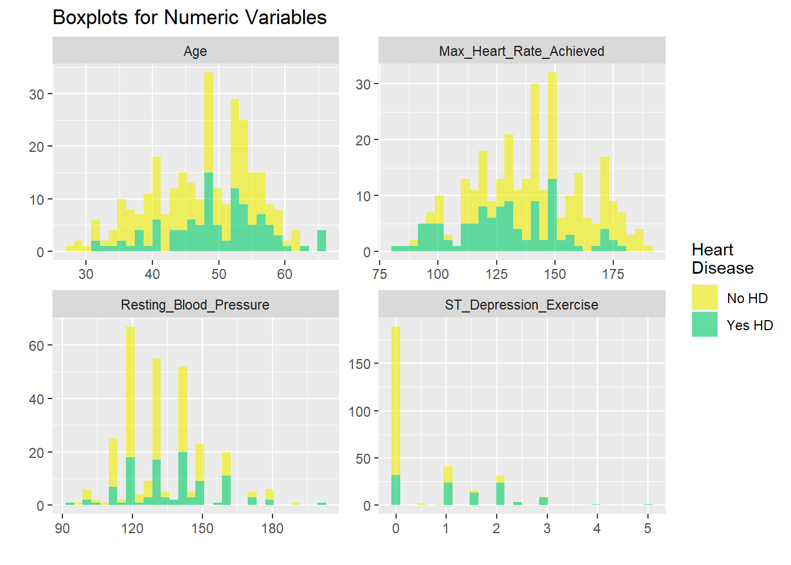
# graphicar representation of there association.
hd_long_fact_tbl <- HD$EU2 %>%
select(Sex,
Chest_Pain_Type,
Fasting_Blood_Sugar,
Resting_ECG,
Exercise_Induced_Angina,
Slope_Peak_Exercise_ST,
Thalassemia,
Num_Major_Vessels,
diag_hd) %>%
#rename(Fasting_Blood_Sugar...x=Fasting_Blood_Sugar, Resting_ECG...x=Resting_ECG ,Exercise_Induced_Angina...x=Exercise_Induced_Angina , Slope_Peak_Exercise_ST...x=Slope_Peak_Exercise_ST, Thalassemia...x=Thalassemia )%>%
mutate(Sex = recode_factor(Sex, `0` = "female",
`1` = "male" ),
Chest_Pain_Type = recode_factor(Chest_Pain_Type, `1` = "typical ",
`2` = "atypical ",
`3` = "non-anginal",
`4` = "asymptomatic"),
Fasting_Blood_Sugar = recode_factor(Fasting_Blood_Sugar, `0` = "<= 120 mg/dl",
`1` = "> 120 mg/dl"),
Resting_ECG = recode_factor(Resting_ECG, `0` = "normal",
`1` = "ST-T abnormality",
`2` = "LV hypertrophy"),
Exercise_Induced_Angina = recode_factor(Exercise_Induced_Angina, `0` = "no",
`1` = "yes"),
Slope_Peak_Exercise_ST = recode_factor(Slope_Peak_Exercise_ST, `1` = "up sloping",
`2` = "flat",
`3` = "down sloping"),
Thalassemia = recode_factor(Thalassemia, `3` = "normal",
`6` = "fixed defect",
`7` = "reversible defect")) %>%
gather(key = "key", value = "value", -diag_hd)
#Visualize with bar plot
hd_long_fact_tbl %>%
ggplot(aes(value)) +
geom_bar(aes(x = value,
fill = diag_hd),
alpha = .6,
position = "dodge",
color = "black",
width = .8
) +
labs(x = "",
y = "",
title = "Scaled Effect of Categorical Variables") +
theme(
axis.text.y = element_blank(),
axis.ticks.y = element_blank()) +
facet_wrap(~ key, scales = "free", nrow = 4) +
scale_fill_manual(
values = c("yellow2", "firebrick1"),
name = "Heart\nDisease",
labels = c("No HD", "Yes HD"))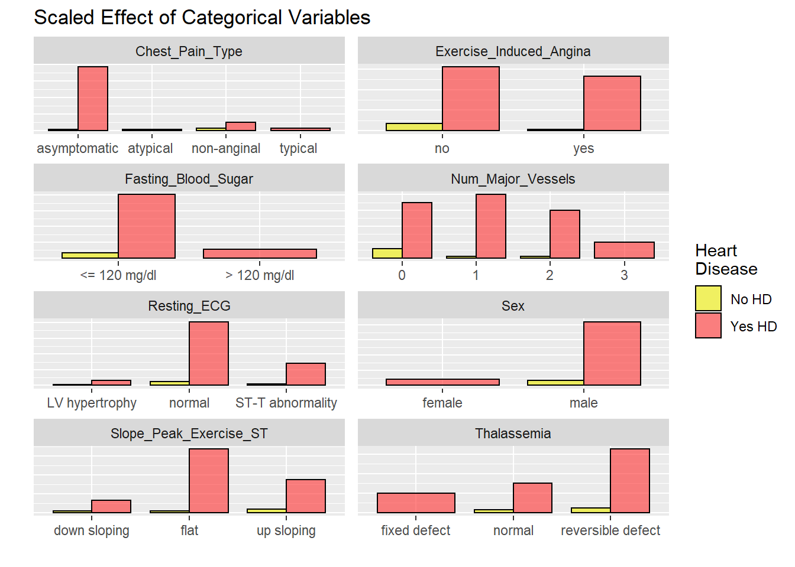
hd_long_cont_tbl <- HD$EU2 %>%
select(Age,
Resting_Blood_Pressure,
Max_Heart_Rate_Achieved,
ST_Depression_Exercise,
#Num_Major_Vessels,
diag_hd) %>%
# rename(Resting_Blood_Pressure...x= Resting_Blood_Pressure,
# Max_Heart_Rate_Achieved...x= Max_Heart_Rate_Achieved,
# ST_Depression_Exercise...x=ST_Depression_Exercise)%>%
gather(key = "key",
value = "value",
-diag_hd)
#Visualize numeric variables as boxplots
h<-hd_long_cont_tbl %>%
ggplot(aes(y = value)) +
geom_histogram(aes(fill = diag_hd),
alpha = .6) +
labs(x = "",
y = "",
title = "Boxplots for Numeric Variables") +
scale_fill_manual(
values = c("yellow2", "springgreen3"),
name = "Heart\nDisease",
labels = c("No HD", "Yes HD")) +
theme() +
facet_wrap( ~ key ,
scales = "free",
ncol = 2)
h +coord_flip()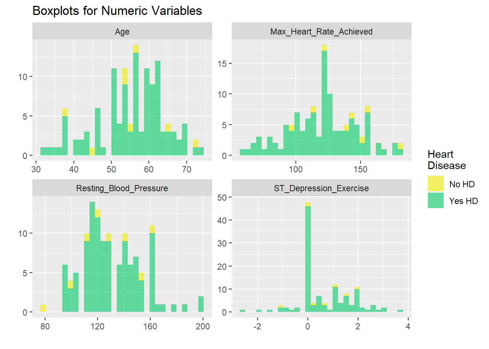
# graphicar representation of there association.
hd_long_fact_tbl <- HD_all %>%
select(Sex,
Chest_Pain_Type,
Fasting_Blood_Sugar,
Resting_ECG,
Exercise_Induced_Angina,
Slope_Peak_Exercise_ST,
Thalassemia,
Num_Major_Vessels,
diag_hd) %>%
mutate(Sex = recode_factor(Sex, `0` = "female",
`1` = "male" ),
Chest_Pain_Type = recode_factor(Chest_Pain_Type, `1` = "typical",
`2` = "atypical ",
`3` = "non-anginal",
`4` = "asymptomatic"),
Fasting_Blood_Sugar = recode_factor(Fasting_Blood_Sugar, `0` = "<= 120 mg/dl",
`1` = "> 120 mg/dl"),
Resting_ECG = recode_factor(Resting_ECG, `0` = "normal",
`1` = "ST-T abnormality",
`2` = "LV hypertrophy"),
Exercise_Induced_Angina = recode_factor(Exercise_Induced_Angina, `0` = "no",
`1` = "yes"),
Slope_Peak_Exercise_ST = recode_factor(Slope_Peak_Exercise_ST, `1` = "up sloping",
`2` = "flat",
`3` = "down sloping"),
Thalassemia = recode_factor(Thalassemia, `3` = "normal",
`6` = "fixed defect",
`7` = "reversible defect")) %>%
gather(key = "key", value = "value", -diag_hd)
#Visualize with bar plot
hd_long_fact_tbl %>%
ggplot(aes(value)) +
geom_bar(aes(x = value,
fill = diag_hd),
alpha = .6,
position = "dodge",
color = "black",
width = .8
) +
labs(x = "",
y = "",
title = "Scaled Effect of Categorical Variables") +
theme(
axis.text.y = element_blank(),
axis.ticks.y = element_blank()) +
facet_wrap(~ key, scales = "free", nrow = 4) +
scale_fill_manual(
values = c("yellow2", "firebrick1"),
name = "Heart\nDisease",
labels = c("No HD", "Yes HD"))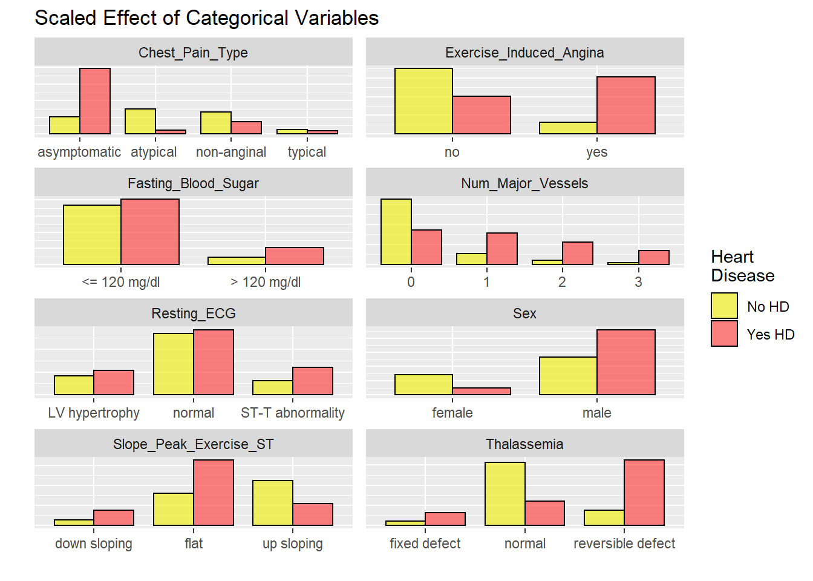
hd_long_cont_tbl <- HD_all %>%
select(Age,
Resting_Blood_Pressure,
Max_Heart_Rate_Achieved,
ST_Depression_Exercise,
#Num_Major_Vessels,
diag_hd) %>%
gather(key = "key", value = "value", -diag_hd)
#Visualize numeric variables as boxplots
h<-hd_long_cont_tbl %>%
ggplot(aes(y = value)) +
geom_histogram(aes(fill = diag_hd),
alpha = .6) +
labs(x = "",
y = "",
title = "Boxplots for Numeric Variables") +
scale_fill_manual(
values = c("yellow2", "springgreen3"),
name = "Heart\nDisease",
labels = c("No HD", "Yes HD")) +
theme() +
facet_wrap( ~ key ,
scales = "free",
ncol = 2)
h +coord_flip()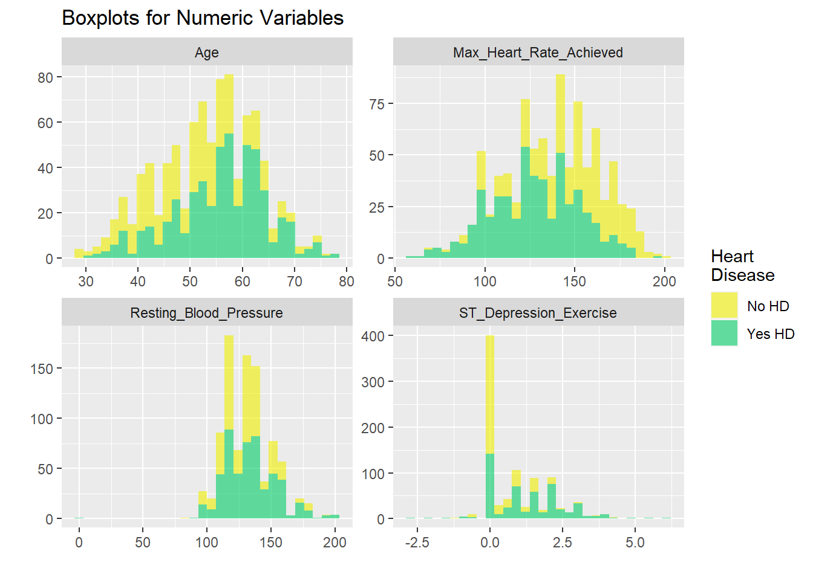
# graphicar representation of there association.
hd_long_fact_tbl <- HD_all %>%
select(Sex,
Chest_Pain_Type,
Fasting_Blood_Sugar,
Resting_ECG,
Exercise_Induced_Angina,
Slope_Peak_Exercise_ST,
Thalassemia,
Num_Major_Vessels,
Diagnosis) %>%
mutate(Sex = recode_factor(Sex, `0` = "female",
`1` = "male" ),
Chest_Pain_Type = recode_factor(Chest_Pain_Type, `1` = "typical",
`2` = "atypical ",
`3` = "non-anginal",
`4` = "asymptomatic"),
Fasting_Blood_Sugar = recode_factor(Fasting_Blood_Sugar, `0` = "<= 120 mg/dl",
`1` = "> 120 mg/dl"),
Resting_ECG = recode_factor(Resting_ECG, `0` = "normal",
`1` = "ST-T abnormality",
`2` = "LV hypertrophy"),
Exercise_Induced_Angina = recode_factor(Exercise_Induced_Angina, `0` = "no",
`1` = "yes"),
Slope_Peak_Exercise_ST = recode_factor(Slope_Peak_Exercise_ST, `1` = "up sloping",
`2` = "flat",
`3` = "down sloping"),
Thalassemia = recode_factor(Thalassemia, `3` = "normal",
`6` = "fixed defect",
`7` = "reversible defect")) %>%
gather(key = "key", value = "value", -Diagnosis )
#Visualize with bar plot
hd_long_fact_tbl %>%
ggplot(aes(value)) +
geom_bar(aes(x = value,
fill = Diagnosis),
alpha = .6,
position = "dodge",
color = "black",
width = .8
) +
labs(x = "",
y = "",
title = "Scaled Effect of Categorical Variables") +
theme(
axis.text.y = element_blank(),
axis.ticks.y = element_blank()) +
facet_wrap(~ key, scales = "free", nrow = 4) +
scale_fill_manual(
values = c("yellow2", "firebrick1", "firebrick2", "firebrick3","firebrick4"),
name = "Heart\nDisease",
labels = c("No HD", "1-HD","2-HD","3-HD","4-HD"))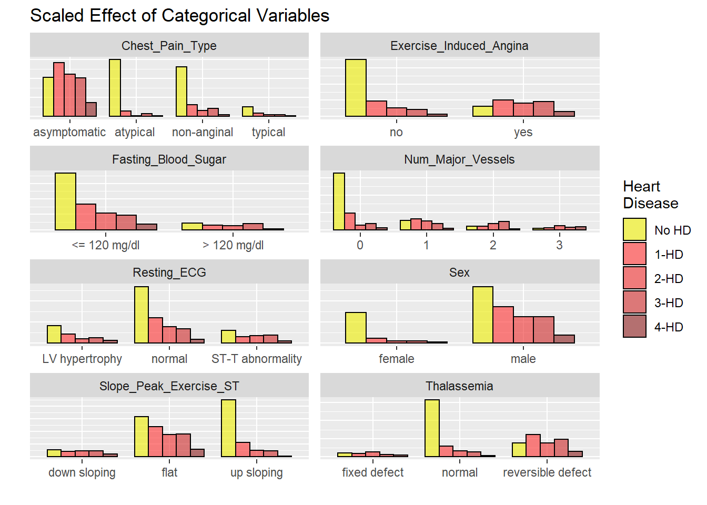
hd_long_cont_tbl <- HD_all %>%
select(Age,
Resting_Blood_Pressure,
Max_Heart_Rate_Achieved,
ST_Depression_Exercise,
#Num_Major_Vessels,
Diagnosis) %>%
gather(key = "key", value = "value", -Diagnosis)
#Visualize numeric variables as boxplots
h<-hd_long_cont_tbl %>%
ggplot(aes(y = value)) +
geom_histogram(aes(fill = Diagnosis),
alpha = .6) +
labs(x = "",
y = "",
title = "Boxplots for Numeric Variables") +
scale_fill_manual(
values = c("yellow2", "springgreen1", "springgreen2", "springgreen3", "seagreen"),
name = "Heart\nDisease",
labels = c("No HD", "1-HD","2-HD","3-HD","4-HD")) +
theme() +
facet_wrap( ~ key ,
scales = "free",
ncol = 2)
h +coord_flip()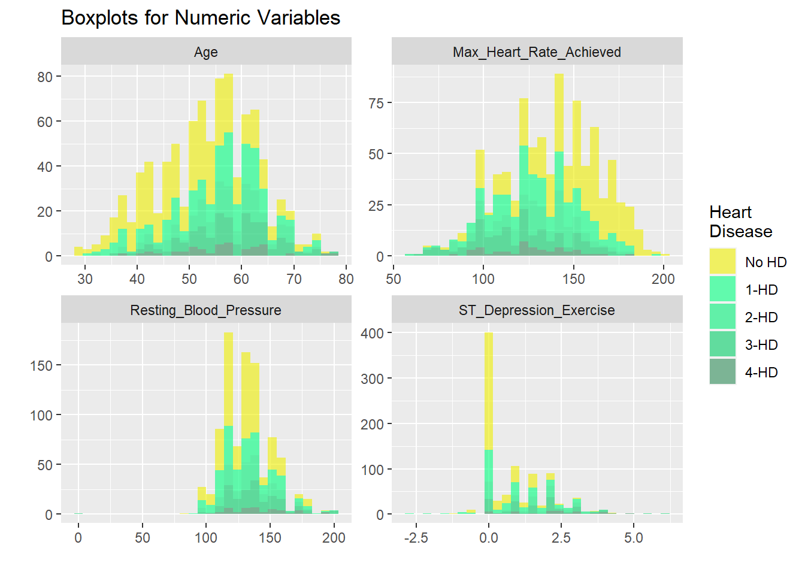
Significant predictors are -[Male, Chest_Pain_Type4=asymptomatic, Resting_Blood_Pressure, Slope_Peak_Exercise_ST2 = flat,Num_Major_Vessels= 1,2,3 , Thalassemia7=‘reversible defect’] for having p-value <0.05, nd for not having 1.0 inside confidence interval. And there odds ratio is closer to higher than 1.0. There are in favour of having heart disease.
So being a male, and having asymptomatic- chest pain, having high blood pressure, having flat slope in ST segment excercise test, have colured major blood vessel by flourosopy and having result -reversible defect in Thalassemia test favoures in having heart disease.
HD$US1$diag_hd = relevel(factor(HD$US1$diag_hd), ref = 1) #likelihood of having hd as reference
lm_US1<- glm(diag_hd~ . -Diagnosis , data=HD$US1, family = binomial(link = "logit"))
summary(lm_US1)##
## Call:
## glm(formula = diag_hd ~ . - Diagnosis, family = binomial(link = "logit"),
## data = HD$US1)
##
## Deviance Residuals:
## Min 1Q Median 3Q Max
## -2.9543 -0.4626 -0.1347 0.3000 2.9613
##
## Coefficients:
## Estimate Std. Error z value Pr(>|z|)
## (Intercept) -5.781938 2.873894 -2.012 0.044232 *
## Age -0.020130 0.024597 -0.818 0.413152
## Sex1 1.482588 0.527083 2.813 0.004911 **
## Chest_Pain_Type2 1.368730 0.795877 1.720 0.085473 .
## Chest_Pain_Type3 0.393063 0.692830 0.567 0.570490
## Chest_Pain_Type4 2.428216 0.703295 3.453 0.000555 ***
## Resting_Blood_Pressure 0.027310 0.011695 2.335 0.019538 *
## Fasting_Blood_Sugar1 -0.386083 0.570987 -0.676 0.498934
## Resting_ECG1 0.986093 2.437582 0.405 0.685818
## Resting_ECG2 0.564759 0.387625 1.457 0.145124
## Max_Heart_Rate_Achieved -0.016244 0.011346 -1.432 0.152210
## Exercise_Induced_Angina1 0.718742 0.440869 1.630 0.103041
## ST_Depression_Exercise 0.423175 0.238064 1.778 0.075475 .
## Slope_Peak_Exercise_ST2 1.284526 0.480089 2.676 0.007460 **
## Slope_Peak_Exercise_ST3 0.485802 0.945243 0.514 0.607291
## Num_Major_Vessels1 2.220978 0.509554 4.359 1.31e-05 ***
## Num_Major_Vessels2 3.200013 0.782107 4.092 4.29e-05 ***
## Num_Major_Vessels3 2.165452 0.899637 2.407 0.016083 *
## Thalassemia6 0.003896 0.788351 0.005 0.996057
## Thalassemia7 1.411668 0.437822 3.224 0.001263 **
## ---
## Signif. codes: 0 '***' 0.001 '**' 0.01 '*' 0.05 '.' 0.1 ' ' 1
##
## (Dispersion parameter for binomial family taken to be 1)
##
## Null deviance: 417.98 on 302 degrees of freedom
## Residual deviance: 187.24 on 283 degrees of freedom
## AIC: 227.24
##
## Number of Fisher Scoring iterations: 6round(exp(cbind(Odds_ratio = coef(lm_US1), confint(lm_US1,level = 0.95))), 3)%>%
kable(caption = 'Odds ratio in US1 hospital (dicotomized)')%>%
kable_styling(full_width = F, fixed_thead = T)| Odds_ratio | 2.5 % | 97.5 % | |
|---|---|---|---|
| (Intercept) | 0.003 | 0.000 | 0.759 |
| Age | 0.980 | 0.933 | 1.028 |
| Sex1 | 4.404 | 1.613 | 12.909 |
| Chest_Pain_Type2 | 3.930 | 0.840 | 19.547 |
| Chest_Pain_Type3 | 1.482 | 0.388 | 6.000 |
| Chest_Pain_Type4 | 11.339 | 3.021 | 48.624 |
| Resting_Blood_Pressure | 1.028 | 1.005 | 1.052 |
| Fasting_Blood_Sugar1 | 0.680 | 0.217 | 2.053 |
| Resting_ECG1 | 2.681 | 0.056 | 236.022 |
| Resting_ECG2 | 1.759 | 0.828 | 3.815 |
| Max_Heart_Rate_Achieved | 0.984 | 0.961 | 1.006 |
| Exercise_Induced_Angina1 | 2.052 | 0.861 | 4.891 |
| ST_Depression_Exercise | 1.527 | 0.968 | 2.474 |
| Slope_Peak_Exercise_ST2 | 3.613 | 1.431 | 9.506 |
| Slope_Peak_Exercise_ST3 | 1.625 | 0.235 | 9.869 |
| Num_Major_Vessels1 | 9.216 | 3.498 | 26.080 |
| Num_Major_Vessels2 | 24.533 | 5.684 | 123.642 |
| Num_Major_Vessels3 | 8.719 | 1.707 | 61.852 |
| Thalassemia6 | 1.004 | 0.215 | 4.890 |
| Thalassemia7 | 4.103 | 1.762 | 9.899 |
HD$US1$Age_a = NULL
HD$US1$Age_a [HD$US1$Age <45] = "mid_40s"
HD$US1$Age_a [HD$US1$Age >=45 & HD$US1$Age <= 59] = "late _40-50"
HD$US1$Age_a [HD$US1$Age > 59] = "elderly"
HD$US1$Age_a = factor(HD$US1$Age_a)
HD$US1$Age_a = relevel(factor(HD$US1$Age_a), ref = "mid_40s")
table(HD$US1$Age_a )##
## mid_40s elderly late _40-50
## 55 91 157lm2_US1<- glm(diag_hd~ . -Diagnosis -Age , data=HD$US1, family = binomial(link = "logit"))
summary(lm2_US1)##
## Call:
## glm(formula = diag_hd ~ . - Diagnosis - Age, family = binomial(link = "logit"),
## data = HD$US1)
##
## Deviance Residuals:
## Min 1Q Median 3Q Max
## -2.9536 -0.4745 -0.1266 0.2968 2.9891
##
## Coefficients:
## Estimate Std. Error z value Pr(>|z|)
## (Intercept) -6.832430 2.538680 -2.691 0.007117 **
## Sex1 1.500438 0.526028 2.852 0.004339 **
## Chest_Pain_Type2 1.361290 0.797675 1.707 0.087902 .
## Chest_Pain_Type3 0.393236 0.694694 0.566 0.571355
## Chest_Pain_Type4 2.435579 0.700611 3.476 0.000508 ***
## Resting_Blood_Pressure 0.025328 0.011494 2.204 0.027552 *
## Fasting_Blood_Sugar1 -0.382319 0.573349 -0.667 0.504889
## Resting_ECG1 0.874282 2.280638 0.383 0.701460
## Resting_ECG2 0.549693 0.387688 1.418 0.156227
## Max_Heart_Rate_Achieved -0.013913 0.011230 -1.239 0.215384
## Exercise_Induced_Angina1 0.728084 0.440563 1.653 0.098408 .
## ST_Depression_Exercise 0.435237 0.238585 1.824 0.068116 .
## Slope_Peak_Exercise_ST2 1.265606 0.480023 2.637 0.008375 **
## Slope_Peak_Exercise_ST3 0.480011 0.950295 0.505 0.613476
## Num_Major_Vessels1 2.163143 0.502139 4.308 1.65e-05 ***
## Num_Major_Vessels2 3.070982 0.772998 3.973 7.10e-05 ***
## Num_Major_Vessels3 2.099731 0.907315 2.314 0.020655 *
## Thalassemia6 -0.004259 0.792081 -0.005 0.995709
## Thalassemia7 1.405255 0.438046 3.208 0.001337 **
## Age_aelderly -0.184885 0.657578 -0.281 0.778587
## Age_alate _40-50 -0.137890 0.546917 -0.252 0.800946
## ---
## Signif. codes: 0 '***' 0.001 '**' 0.01 '*' 0.05 '.' 0.1 ' ' 1
##
## (Dispersion parameter for binomial family taken to be 1)
##
## Null deviance: 417.98 on 302 degrees of freedom
## Residual deviance: 187.83 on 282 degrees of freedom
## AIC: 229.83
##
## Number of Fisher Scoring iterations: 6fit_backward = step(lm2_US1, direction = "backward")## Start: AIC=229.83
## diag_hd ~ (Age + Sex + Chest_Pain_Type + Resting_Blood_Pressure +
## Fasting_Blood_Sugar + Resting_ECG + Max_Heart_Rate_Achieved +
## Exercise_Induced_Angina + ST_Depression_Exercise + Slope_Peak_Exercise_ST +
## Num_Major_Vessels + Thalassemia + Diagnosis + Age_a) - Diagnosis -
## Age
##
## Df Deviance AIC
## - Age_a 2 187.91 225.91
## - Resting_ECG 2 189.94 227.94
## - Fasting_Blood_Sugar 1 188.28 228.28
## - Max_Heart_Rate_Achieved 1 189.40 229.40
## <none> 187.83 229.83
## - Exercise_Induced_Angina 1 190.54 230.54
## - ST_Depression_Exercise 1 191.31 231.31
## - Resting_Blood_Pressure 1 192.92 232.92
## - Slope_Peak_Exercise_ST 2 195.41 233.41
## - Sex 1 196.58 236.58
## - Thalassemia 2 199.97 237.97
## - Chest_Pain_Type 3 210.99 246.99
## - Num_Major_Vessels 3 223.24 259.24
##
## Step: AIC=225.91
## diag_hd ~ Sex + Chest_Pain_Type + Resting_Blood_Pressure + Fasting_Blood_Sugar +
## Resting_ECG + Max_Heart_Rate_Achieved + Exercise_Induced_Angina +
## ST_Depression_Exercise + Slope_Peak_Exercise_ST + Num_Major_Vessels +
## Thalassemia
##
## Df Deviance AIC
## - Resting_ECG 2 189.97 223.97
## - Fasting_Blood_Sugar 1 188.40 224.40
## - Max_Heart_Rate_Achieved 1 189.45 225.45
## <none> 187.91 225.91
## - Exercise_Induced_Angina 1 190.61 226.61
## - ST_Depression_Exercise 1 191.51 227.51
## - Resting_Blood_Pressure 1 193.02 229.02
## - Slope_Peak_Exercise_ST 2 195.41 229.41
## - Sex 1 197.00 233.00
## - Thalassemia 2 200.09 234.09
## - Chest_Pain_Type 3 211.35 243.35
## - Num_Major_Vessels 3 224.92 256.92
##
## Step: AIC=223.97
## diag_hd ~ Sex + Chest_Pain_Type + Resting_Blood_Pressure + Fasting_Blood_Sugar +
## Max_Heart_Rate_Achieved + Exercise_Induced_Angina + ST_Depression_Exercise +
## Slope_Peak_Exercise_ST + Num_Major_Vessels + Thalassemia
##
## Df Deviance AIC
## - Fasting_Blood_Sugar 1 190.47 222.47
## - Max_Heart_Rate_Achieved 1 191.51 223.51
## <none> 189.97 223.97
## - Exercise_Induced_Angina 1 192.69 224.69
## - ST_Depression_Exercise 1 193.67 225.67
## - Resting_Blood_Pressure 1 196.08 228.08
## - Slope_Peak_Exercise_ST 2 198.19 228.19
## - Thalassemia 2 201.49 231.49
## - Sex 1 199.51 231.51
## - Chest_Pain_Type 3 213.47 241.47
## - Num_Major_Vessels 3 228.81 256.81
##
## Step: AIC=222.47
## diag_hd ~ Sex + Chest_Pain_Type + Resting_Blood_Pressure + Max_Heart_Rate_Achieved +
## Exercise_Induced_Angina + ST_Depression_Exercise + Slope_Peak_Exercise_ST +
## Num_Major_Vessels + Thalassemia
##
## Df Deviance AIC
## - Max_Heart_Rate_Achieved 1 192.10 222.10
## <none> 190.47 222.47
## - Exercise_Induced_Angina 1 192.99 222.99
## - ST_Depression_Exercise 1 194.48 224.48
## - Resting_Blood_Pressure 1 196.22 226.22
## - Slope_Peak_Exercise_ST 2 198.47 226.47
## - Sex 1 199.79 229.79
## - Thalassemia 2 202.37 230.37
## - Chest_Pain_Type 3 215.94 241.94
## - Num_Major_Vessels 3 228.86 254.86
##
## Step: AIC=222.1
## diag_hd ~ Sex + Chest_Pain_Type + Resting_Blood_Pressure + Exercise_Induced_Angina +
## ST_Depression_Exercise + Slope_Peak_Exercise_ST + Num_Major_Vessels +
## Thalassemia
##
## Df Deviance AIC
## <none> 192.10 222.10
## - Exercise_Induced_Angina 1 195.32 223.32
## - ST_Depression_Exercise 1 196.71 224.71
## - Resting_Blood_Pressure 1 197.36 225.36
## - Sex 1 200.62 228.62
## - Slope_Peak_Exercise_ST 2 203.01 229.01
## - Thalassemia 2 204.45 230.45
## - Chest_Pain_Type 3 220.65 244.65
## - Num_Major_Vessels 3 233.93 257.93Age,Num_Major_Vessels1 ,Num_Major_Vessels3 , Thalassemia7 are significant.
HD$US2$diag_hd = relevel(factor(HD$US2$diag_hd), ref = 1) #likelihood of having hd as reference
lm_US2<- glm(diag_hd~ . -Diagnosis , data=HD$US2, family = binomial(link = "logit"))
summary(lm_US2)##
## Call:
## glm(formula = diag_hd ~ . - Diagnosis, family = binomial(link = "logit"),
## data = HD$US2)
##
## Deviance Residuals:
## Min 1Q Median 3Q Max
## -3.2782 -0.2381 0.2276 0.4363 2.0383
##
## Coefficients:
## Estimate Std. Error z value Pr(>|z|)
## (Intercept) -8.33236 3.07554 -2.709 0.00674 **
## Age 0.08265 0.03123 2.647 0.00813 **
## Sex1 1.89266 1.20177 1.575 0.11528
## Chest_Pain_Type2 -1.14186 1.32003 -0.865 0.38702
## Chest_Pain_Type3 -0.22039 1.11353 -0.198 0.84311
## Chest_Pain_Type4 0.80715 1.06946 0.755 0.45041
## Resting_Blood_Pressure -0.01020 0.01336 -0.764 0.44516
## Fasting_Blood_Sugar1 0.33977 0.52413 0.648 0.51683
## Resting_ECG1 0.07689 0.53111 0.145 0.88489
## Resting_ECG2 -0.12965 0.72166 -0.180 0.85743
## Max_Heart_Rate_Achieved 0.01100 0.01128 0.975 0.32949
## Exercise_Induced_Angina1 0.94539 0.53640 1.762 0.07799 .
## ST_Depression_Exercise 0.37088 0.23792 1.559 0.11903
## Slope_Peak_Exercise_ST2 -0.59874 0.70370 -0.851 0.39485
## Slope_Peak_Exercise_ST3 -0.46413 0.77673 -0.598 0.55015
## Num_Major_Vessels1 2.34536 0.75483 3.107 0.00189 **
## Num_Major_Vessels2 1.54270 0.89089 1.732 0.08334 .
## Num_Major_Vessels3 1.73489 0.78483 2.211 0.02707 *
## Thalassemia6 1.07249 0.86379 1.242 0.21438
## Thalassemia7 2.09753 0.53647 3.910 9.24e-05 ***
## ---
## Signif. codes: 0 '***' 0.001 '**' 0.01 '*' 0.05 '.' 0.1 ' ' 1
##
## (Dispersion parameter for binomial family taken to be 1)
##
## Null deviance: 227.10 on 199 degrees of freedom
## Residual deviance: 128.97 on 180 degrees of freedom
## AIC: 168.97
##
## Number of Fisher Scoring iterations: 6round(exp(cbind(Odds_ratio = coef(lm_US2), confint(lm_US2,level = 0.95))), 3)## Odds_ratio 2.5 % 97.5 %
## (Intercept) 0.000 0.000 0.085
## Age 1.086 1.024 1.158
## Sex1 6.637 0.605 76.891
## Chest_Pain_Type2 0.319 0.021 3.998
## Chest_Pain_Type3 0.802 0.083 6.796
## Chest_Pain_Type4 2.242 0.253 17.719
## Resting_Blood_Pressure 0.990 0.964 1.015
## Fasting_Blood_Sugar1 1.405 0.506 4.030
## Resting_ECG1 1.080 0.379 3.096
## Resting_ECG2 0.878 0.217 3.765
## Max_Heart_Rate_Achieved 1.011 0.989 1.034
## Exercise_Induced_Angina1 2.574 0.907 7.553
## ST_Depression_Exercise 1.449 0.915 2.348
## Slope_Peak_Exercise_ST2 0.550 0.129 2.084
## Slope_Peak_Exercise_ST3 0.629 0.128 2.786
## Num_Major_Vessels1 10.437 2.710 55.939
## Num_Major_Vessels2 4.677 0.962 36.154
## Num_Major_Vessels3 5.668 1.318 29.562
## Thalassemia6 2.923 0.554 17.000
## Thalassemia7 8.146 2.949 24.594HD$US2$Age_a = NULL
HD$US2$Age_a [HD$US2$Age <45] = "mid_40s"
HD$US2$Age_a [HD$US2$Age >=45 & HD$US2$Age <= 59] = "late _40-50"
HD$US2$Age_a [HD$US2$Age > 59] = "elderly"
HD$US2$Age_a = factor(HD$US2$Age_a)
HD$US2$Age_a = relevel(factor(HD$US2$Age_a), ref = "mid_40s")
table(HD$US2$Age_a )##
## mid_40s elderly late _40-50
## 10 105 85lm2_US2<- glm(diag_hd~ . -Diagnosis -Age , data=HD$US2, family = binomial(link = "logit"))
summary(lm2_US2)##
## Call:
## glm(formula = diag_hd ~ . - Diagnosis - Age, family = binomial(link = "logit"),
## data = HD$US2)
##
## Deviance Residuals:
## Min 1Q Median 3Q Max
## -3.0217 -0.1412 0.2214 0.4245 1.9508
##
## Coefficients:
## Estimate Std. Error z value Pr(>|z|)
## (Intercept) -7.19863 2.84086 -2.534 0.01128 *
## Sex1 2.23440 1.24090 1.801 0.07176 .
## Chest_Pain_Type2 -1.47491 1.35510 -1.088 0.27641
## Chest_Pain_Type3 -0.07324 1.14110 -0.064 0.94883
## Chest_Pain_Type4 0.88689 1.10279 0.804 0.42127
## Resting_Blood_Pressure -0.01284 0.01418 -0.905 0.36542
## Fasting_Blood_Sugar1 0.37637 0.52881 0.712 0.47663
## Resting_ECG1 -0.21310 0.55572 -0.383 0.70138
## Resting_ECG2 -0.29335 0.75047 -0.391 0.69588
## Max_Heart_Rate_Achieved 0.01450 0.01172 1.237 0.21601
## Exercise_Induced_Angina1 0.80305 0.53752 1.494 0.13518
## ST_Depression_Exercise 0.31869 0.24205 1.317 0.18797
## Slope_Peak_Exercise_ST2 -0.41519 0.70347 -0.590 0.55506
## Slope_Peak_Exercise_ST3 -0.15003 0.77651 -0.193 0.84680
## Num_Major_Vessels1 2.53050 0.79763 3.173 0.00151 **
## Num_Major_Vessels2 1.30385 0.88658 1.471 0.14139
## Num_Major_Vessels3 1.76204 0.80026 2.202 0.02768 *
## Thalassemia6 1.14825 0.87628 1.310 0.19007
## Thalassemia7 2.38008 0.57861 4.113 3.9e-05 ***
## Age_aelderly 3.71125 1.29171 2.873 0.00406 **
## Age_alate _40-50 3.04015 1.27191 2.390 0.01684 *
## ---
## Signif. codes: 0 '***' 0.001 '**' 0.01 '*' 0.05 '.' 0.1 ' ' 1
##
## (Dispersion parameter for binomial family taken to be 1)
##
## Null deviance: 227.10 on 199 degrees of freedom
## Residual deviance: 125.62 on 179 degrees of freedom
## AIC: 167.62
##
## Number of Fisher Scoring iterations: 6fit_backward = step(lm2_US2, direction = "backward")## Start: AIC=167.62
## diag_hd ~ (Age + Sex + Chest_Pain_Type + Resting_Blood_Pressure +
## Fasting_Blood_Sugar + Resting_ECG + Max_Heart_Rate_Achieved +
## Exercise_Induced_Angina + ST_Depression_Exercise + Slope_Peak_Exercise_ST +
## Num_Major_Vessels + Thalassemia + Diagnosis + Age_a) - Diagnosis -
## Age
##
## Df Deviance AIC
## - Resting_ECG 2 125.83 163.83
## - Slope_Peak_Exercise_ST 2 126.08 164.08
## - Fasting_Blood_Sugar 1 126.13 166.13
## - Resting_Blood_Pressure 1 126.45 166.45
## - Max_Heart_Rate_Achieved 1 127.17 167.17
## - ST_Depression_Exercise 1 127.37 167.37
## <none> 125.62 167.62
## - Exercise_Induced_Angina 1 127.87 167.87
## - Sex 1 128.82 168.82
## - Chest_Pain_Type 3 133.09 169.09
## - Age_a 2 136.65 174.65
## - Num_Major_Vessels 3 142.69 178.69
## - Thalassemia 2 145.64 183.64
##
## Step: AIC=163.83
## diag_hd ~ Sex + Chest_Pain_Type + Resting_Blood_Pressure + Fasting_Blood_Sugar +
## Max_Heart_Rate_Achieved + Exercise_Induced_Angina + ST_Depression_Exercise +
## Slope_Peak_Exercise_ST + Num_Major_Vessels + Thalassemia +
## Age_a
##
## Df Deviance AIC
## - Slope_Peak_Exercise_ST 2 126.20 160.21
## - Fasting_Blood_Sugar 1 126.29 162.29
## - Resting_Blood_Pressure 1 126.66 162.66
## - Max_Heart_Rate_Achieved 1 127.45 163.45
## - ST_Depression_Exercise 1 127.69 163.69
## <none> 125.83 163.83
## - Exercise_Induced_Angina 1 128.12 164.12
## - Sex 1 128.92 164.92
## - Chest_Pain_Type 3 133.20 165.20
## - Age_a 2 136.66 170.66
## - Num_Major_Vessels 3 143.35 175.35
## - Thalassemia 2 145.85 179.85
##
## Step: AIC=160.2
## diag_hd ~ Sex + Chest_Pain_Type + Resting_Blood_Pressure + Fasting_Blood_Sugar +
## Max_Heart_Rate_Achieved + Exercise_Induced_Angina + ST_Depression_Exercise +
## Num_Major_Vessels + Thalassemia + Age_a
##
## Df Deviance AIC
## - Fasting_Blood_Sugar 1 126.68 158.68
## - Resting_Blood_Pressure 1 127.02 159.01
## - Max_Heart_Rate_Achieved 1 127.86 159.86
## <none> 126.20 160.21
## - Exercise_Induced_Angina 1 128.28 160.28
## - ST_Depression_Exercise 1 128.36 160.36
## - Sex 1 129.24 161.24
## - Chest_Pain_Type 3 134.03 162.03
## - Age_a 2 136.95 166.95
## - Num_Major_Vessels 3 144.63 172.63
## - Thalassemia 2 147.36 177.36
##
## Step: AIC=158.68
## diag_hd ~ Sex + Chest_Pain_Type + Resting_Blood_Pressure + Max_Heart_Rate_Achieved +
## Exercise_Induced_Angina + ST_Depression_Exercise + Num_Major_Vessels +
## Thalassemia + Age_a
##
## Df Deviance AIC
## - Resting_Blood_Pressure 1 127.42 157.42
## - Max_Heart_Rate_Achieved 1 128.22 158.22
## - Exercise_Induced_Angina 1 128.46 158.46
## <none> 126.68 158.68
## - ST_Depression_Exercise 1 128.90 158.90
## - Sex 1 129.69 159.69
## - Chest_Pain_Type 3 134.19 160.19
## - Age_a 2 137.93 165.93
## - Num_Major_Vessels 3 145.51 171.51
## - Thalassemia 2 148.84 176.84
##
## Step: AIC=157.42
## diag_hd ~ Sex + Chest_Pain_Type + Max_Heart_Rate_Achieved + Exercise_Induced_Angina +
## ST_Depression_Exercise + Num_Major_Vessels + Thalassemia +
## Age_a
##
## Df Deviance AIC
## - Max_Heart_Rate_Achieved 1 128.66 156.66
## - Exercise_Induced_Angina 1 129.07 157.07
## <none> 127.42 157.42
## - ST_Depression_Exercise 1 129.50 157.50
## - Sex 1 130.34 158.34
## - Chest_Pain_Type 3 134.55 158.55
## - Age_a 2 138.12 164.12
## - Num_Major_Vessels 3 145.81 169.81
## - Thalassemia 2 148.84 174.84
##
## Step: AIC=156.66
## diag_hd ~ Sex + Chest_Pain_Type + Exercise_Induced_Angina + ST_Depression_Exercise +
## Num_Major_Vessels + Thalassemia + Age_a
##
## Df Deviance AIC
## - Exercise_Induced_Angina 1 130.36 156.36
## - Chest_Pain_Type 3 134.56 156.56
## <none> 128.66 156.66
## - ST_Depression_Exercise 1 131.40 157.40
## - Sex 1 132.12 158.12
## - Age_a 2 138.50 162.50
## - Num_Major_Vessels 3 146.26 168.26
## - Thalassemia 2 149.38 173.38
##
## Step: AIC=156.36
## diag_hd ~ Sex + Chest_Pain_Type + ST_Depression_Exercise + Num_Major_Vessels +
## Thalassemia + Age_a
##
## Df Deviance AIC
## <none> 130.36 156.36
## - Sex 1 133.26 157.26
## - Chest_Pain_Type 3 137.61 157.61
## - ST_Depression_Exercise 1 134.38 158.38
## - Age_a 2 141.09 163.09
## - Num_Major_Vessels 3 149.45 169.45
## - Thalassemia 2 153.13 175.13HD$EU1$diag_hd = relevel(factor(HD$EU1$diag_hd), ref = 1) #likelihood of having hd as reference
lm_EU1<- glm(diag_hd~ . -Diagnosis , data=HD$EU1, family = binomial(link = "logit"))
summary(lm_EU1)##
## Call:
## glm(formula = diag_hd ~ . - Diagnosis, family = binomial(link = "logit"),
## data = HD$EU1)
##
## Deviance Residuals:
## Min 1Q Median 3Q Max
## -2.4067 -0.2885 -0.0663 0.1314 2.4787
##
## Coefficients:
## Estimate Std. Error z value Pr(>|z|)
## (Intercept) -5.236728 3.684075 -1.421 0.15519
## Age -0.012177 0.037084 -0.328 0.74263
## Sex1 1.575734 0.613147 2.570 0.01017 *
## Chest_Pain_Type2 -2.902501 1.110826 -2.613 0.00898 **
## Chest_Pain_Type3 -1.235115 1.076021 -1.148 0.25103
## Chest_Pain_Type4 -0.276072 1.033471 -0.267 0.78937
## Resting_Blood_Pressure -0.001465 0.015058 -0.097 0.92247
## Fasting_Blood_Sugar1 1.189227 1.073343 1.108 0.26788
## Resting_ECG1 -0.725912 0.642932 -1.129 0.25887
## Resting_ECG2 -1.310094 4.695659 -0.279 0.78024
## Max_Heart_Rate_Achieved 0.005800 0.013005 0.446 0.65559
## Exercise_Induced_Angina1 1.379117 0.618130 2.231 0.02567 *
## ST_Depression_Exercise 1.083567 0.351036 3.087 0.00202 **
## Slope_Peak_Exercise_ST2 1.975288 0.602724 3.277 0.00105 **
## Slope_Peak_Exercise_ST3 3.898442 1.455555 2.678 0.00740 **
## Num_Major_Vessels1 2.153710 0.675175 3.190 0.00142 **
## Num_Major_Vessels2 1.900744 0.732566 2.595 0.00947 **
## Num_Major_Vessels3 3.386836 1.210840 2.797 0.00516 **
## Thalassemia6 2.260728 0.833977 2.711 0.00671 **
## Thalassemia7 2.506118 0.545701 4.592 4.38e-06 ***
## ---
## Signif. codes: 0 '***' 0.001 '**' 0.01 '*' 0.05 '.' 0.1 ' ' 1
##
## (Dispersion parameter for binomial family taken to be 1)
##
## Null deviance: 384.39 on 293 degrees of freedom
## Residual deviance: 126.65 on 274 degrees of freedom
## AIC: 166.65
##
## Number of Fisher Scoring iterations: 7round(exp(cbind(Odds_ratio = coef(lm_EU1), confint(lm_EU1,level = 0.95))), 3)## Odds_ratio 2.5 % 97.5 %
## (Intercept) 0.005 0.000 6.704
## Age 0.988 0.917 1.062
## Sex1 4.834 1.541 17.448
## Chest_Pain_Type2 0.055 0.006 0.490
## Chest_Pain_Type3 0.291 0.035 2.532
## Chest_Pain_Type4 0.759 0.102 6.227
## Resting_Blood_Pressure 0.999 0.969 1.028
## Fasting_Blood_Sugar1 3.285 0.423 27.918
## Resting_ECG1 0.484 0.129 1.648
## Resting_ECG2 0.270 0.000 42.996
## Max_Heart_Rate_Achieved 1.006 0.981 1.033
## Exercise_Induced_Angina1 3.971 1.193 13.764
## ST_Depression_Exercise 2.955 1.509 6.053
## Slope_Peak_Exercise_ST2 7.209 2.344 25.563
## Slope_Peak_Exercise_ST3 49.326 2.147 804.766
## Num_Major_Vessels1 8.617 2.402 34.823
## Num_Major_Vessels2 6.691 1.658 30.190
## Num_Major_Vessels3 29.572 3.600 477.140
## Thalassemia6 9.590 1.958 52.871
## Thalassemia7 12.257 4.418 38.258HD$EU1$Age_a = NULL
HD$EU1$Age_a [HD$EU1$Age <45] = "mid_40s"
HD$EU1$Age_a [HD$EU1$Age >=45 & HD$EU1$Age <= 59] = "late _40-50"
HD$EU1$Age_a [HD$EU1$Age > 59] = "elderly"
HD$EU1$Age_a = factor(HD$EU1$Age_a)
HD$EU1$Age_a = relevel(factor(HD$EU1$Age_a), ref = "mid_40s")
table(HD$EU1$Age_a )##
## mid_40s elderly late _40-50
## 96 11 187lm2_EU1<- glm(diag_hd~ . -Diagnosis -Age , data=HD$EU1, family = binomial(link = "logit"))
summary(lm2_EU1)##
## Call:
## glm(formula = diag_hd ~ . - Diagnosis - Age, family = binomial(link = "logit"),
## data = HD$EU1)
##
## Deviance Residuals:
## Min 1Q Median 3Q Max
## -2.34068 -0.26932 -0.06086 0.12049 2.47463
##
## Coefficients:
## Estimate Std. Error z value Pr(>|z|)
## (Intercept) -6.418430 3.237360 -1.983 0.047411 *
## Sex1 1.714967 0.638016 2.688 0.007189 **
## Chest_Pain_Type2 -2.869944 1.150518 -2.494 0.012614 *
## Chest_Pain_Type3 -1.314227 1.132976 -1.160 0.246058
## Chest_Pain_Type4 -0.222955 1.079852 -0.206 0.836425
## Resting_Blood_Pressure -0.006033 0.015376 -0.392 0.694787
## Fasting_Blood_Sugar1 1.139936 1.113721 1.024 0.306053
## Resting_ECG1 -0.716091 0.643625 -1.113 0.265885
## Resting_ECG2 -1.119824 6.077027 -0.184 0.853800
## Max_Heart_Rate_Achieved 0.010344 0.013437 0.770 0.441429
## Exercise_Induced_Angina1 1.334852 0.613518 2.176 0.029575 *
## ST_Depression_Exercise 1.143392 0.364355 3.138 0.001700 **
## Slope_Peak_Exercise_ST2 2.076946 0.623864 3.329 0.000871 ***
## Slope_Peak_Exercise_ST3 4.088639 1.465509 2.790 0.005272 **
## Num_Major_Vessels1 2.241175 0.696881 3.216 0.001300 **
## Num_Major_Vessels2 1.995245 0.759175 2.628 0.008584 **
## Num_Major_Vessels3 3.477139 1.200058 2.897 0.003762 **
## Thalassemia6 2.287661 0.855910 2.673 0.007522 **
## Thalassemia7 2.676854 0.572353 4.677 2.91e-06 ***
## Age_aelderly -1.410450 1.319564 -1.069 0.285126
## Age_alate _40-50 0.456913 0.606623 0.753 0.451326
## ---
## Signif. codes: 0 '***' 0.001 '**' 0.01 '*' 0.05 '.' 0.1 ' ' 1
##
## (Dispersion parameter for binomial family taken to be 1)
##
## Null deviance: 384.39 on 293 degrees of freedom
## Residual deviance: 124.25 on 273 degrees of freedom
## AIC: 166.25
##
## Number of Fisher Scoring iterations: 7fit_backward = step(lm2_EU1, direction = "backward")## Start: AIC=166.25
## diag_hd ~ (Age + Sex + Chest_Pain_Type + Resting_Blood_Pressure +
## Fasting_Blood_Sugar + Resting_ECG + Max_Heart_Rate_Achieved +
## Exercise_Induced_Angina + ST_Depression_Exercise + Slope_Peak_Exercise_ST +
## Num_Major_Vessels + Thalassemia + Diagnosis + Age_a) - Diagnosis -
## Age
##
## Df Deviance AIC
## - Resting_ECG 2 125.56 163.56
## - Resting_Blood_Pressure 1 124.41 164.41
## - Age_a 2 126.76 164.76
## - Max_Heart_Rate_Achieved 1 124.86 164.86
## - Fasting_Blood_Sugar 1 125.33 165.33
## <none> 124.25 166.25
## - Exercise_Induced_Angina 1 129.07 169.07
## - Sex 1 132.67 172.67
## - ST_Depression_Exercise 1 134.95 174.95
## - Slope_Peak_Exercise_ST 2 140.60 178.60
## - Chest_Pain_Type 3 145.18 181.18
## - Num_Major_Vessels 3 147.81 183.81
## - Thalassemia 2 153.90 191.90
##
## Step: AIC=163.56
## diag_hd ~ Sex + Chest_Pain_Type + Resting_Blood_Pressure + Fasting_Blood_Sugar +
## Max_Heart_Rate_Achieved + Exercise_Induced_Angina + ST_Depression_Exercise +
## Slope_Peak_Exercise_ST + Num_Major_Vessels + Thalassemia +
## Age_a
##
## Df Deviance AIC
## - Resting_Blood_Pressure 1 125.73 161.73
## - Max_Heart_Rate_Achieved 1 126.22 162.22
## - Age_a 2 128.35 162.35
## - Fasting_Blood_Sugar 1 126.39 162.39
## <none> 125.56 163.56
## - Exercise_Induced_Angina 1 130.04 166.04
## - Sex 1 135.15 171.15
## - ST_Depression_Exercise 1 136.36 172.36
## - Slope_Peak_Exercise_ST 2 140.84 174.84
## - Chest_Pain_Type 3 146.42 178.42
## - Num_Major_Vessels 3 149.22 181.22
## - Thalassemia 2 155.16 189.16
##
## Step: AIC=161.73
## diag_hd ~ Sex + Chest_Pain_Type + Fasting_Blood_Sugar + Max_Heart_Rate_Achieved +
## Exercise_Induced_Angina + ST_Depression_Exercise + Slope_Peak_Exercise_ST +
## Num_Major_Vessels + Thalassemia + Age_a
##
## Df Deviance AIC
## - Age_a 2 128.38 160.38
## - Max_Heart_Rate_Achieved 1 126.44 160.44
## - Fasting_Blood_Sugar 1 126.53 160.53
## <none> 125.73 161.73
## - Exercise_Induced_Angina 1 130.11 164.11
## - Sex 1 135.38 169.38
## - ST_Depression_Exercise 1 136.56 170.56
## - Slope_Peak_Exercise_ST 2 140.85 172.85
## - Chest_Pain_Type 3 147.69 177.69
## - Num_Major_Vessels 3 149.22 179.22
## - Thalassemia 2 155.51 187.51
##
## Step: AIC=160.38
## diag_hd ~ Sex + Chest_Pain_Type + Fasting_Blood_Sugar + Max_Heart_Rate_Achieved +
## Exercise_Induced_Angina + ST_Depression_Exercise + Slope_Peak_Exercise_ST +
## Num_Major_Vessels + Thalassemia
##
## Df Deviance AIC
## - Max_Heart_Rate_Achieved 1 128.98 158.98
## - Fasting_Blood_Sugar 1 129.32 159.32
## <none> 128.38 160.38
## - Exercise_Induced_Angina 1 133.09 163.09
## - Sex 1 137.60 167.60
## - ST_Depression_Exercise 1 138.53 168.53
## - Slope_Peak_Exercise_ST 2 143.15 171.15
## - Chest_Pain_Type 3 150.08 176.08
## - Num_Major_Vessels 3 150.92 176.92
## - Thalassemia 2 156.44 184.44
##
## Step: AIC=158.98
## diag_hd ~ Sex + Chest_Pain_Type + Fasting_Blood_Sugar + Exercise_Induced_Angina +
## ST_Depression_Exercise + Slope_Peak_Exercise_ST + Num_Major_Vessels +
## Thalassemia
##
## Df Deviance AIC
## - Fasting_Blood_Sugar 1 129.79 157.79
## <none> 128.98 158.98
## - Exercise_Induced_Angina 1 133.14 161.14
## - Sex 1 138.12 166.12
## - ST_Depression_Exercise 1 138.74 166.74
## - Slope_Peak_Exercise_ST 2 143.57 169.57
## - Chest_Pain_Type 3 150.08 174.08
## - Num_Major_Vessels 3 151.12 175.12
## - Thalassemia 2 156.45 182.45
##
## Step: AIC=157.79
## diag_hd ~ Sex + Chest_Pain_Type + Exercise_Induced_Angina + ST_Depression_Exercise +
## Slope_Peak_Exercise_ST + Num_Major_Vessels + Thalassemia
##
## Df Deviance AIC
## <none> 129.79 157.79
## - Exercise_Induced_Angina 1 134.26 160.26
## - Sex 1 138.96 164.96
## - ST_Depression_Exercise 1 139.54 165.54
## - Slope_Peak_Exercise_ST 2 143.97 167.97
## - Chest_Pain_Type 3 151.29 173.29
## - Num_Major_Vessels 3 155.32 177.32
## - Thalassemia 2 158.44 182.44HD$EU2$diag_hd = relevel(factor(HD$EU2$diag_hd), ref = 1) #likelihood of having hd as reference
lm_EU2<- glm(diag_hd~ . -Diagnosis , data=HD$EU2, family = binomial(link = "logit"))
summary(lm_EU2)##
## Call:
## glm(formula = diag_hd ~ . - Diagnosis, family = binomial(link = "logit"),
## data = HD$EU2)
##
## Deviance Residuals:
## Min 1Q Median 3Q Max
## -2.37218 0.00000 0.00481 0.09388 1.48694
##
## Coefficients:
## Estimate Std. Error z value Pr(>|z|)
## (Intercept) 3.567e+01 1.436e+04 0.002 0.9980
## Age 9.012e-02 1.720e-01 0.524 0.6003
## Sex1 -2.090e+01 6.808e+03 -0.003 0.9976
## Chest_Pain_Type2 -2.266e+01 1.264e+04 -0.002 0.9986
## Chest_Pain_Type3 -2.181e+01 1.264e+04 -0.002 0.9986
## Chest_Pain_Type4 -1.808e+01 1.264e+04 -0.001 0.9989
## Resting_Blood_Pressure -2.904e-02 5.529e-02 -0.525 0.5994
## Fasting_Blood_Sugar1 1.738e+01 5.532e+03 0.003 0.9975
## Resting_ECG1 2.568e+00 2.925e+00 0.878 0.3801
## Resting_ECG2 -3.622e+00 2.882e+00 -1.257 0.2088
## Max_Heart_Rate_Achieved 2.098e-02 4.013e-02 0.523 0.6011
## Exercise_Induced_Angina1 3.995e+00 2.886e+00 1.384 0.1663
## ST_Depression_Exercise -1.466e-01 9.555e-01 -0.153 0.8780
## Slope_Peak_Exercise_ST2 3.288e+00 1.815e+00 1.812 0.0701 .
## Slope_Peak_Exercise_ST3 -4.681e+00 3.661e+00 -1.279 0.2010
## Num_Major_Vessels1 2.607e+00 2.343e+00 1.113 0.2658
## Num_Major_Vessels2 1.189e+00 2.258e+00 0.527 0.5984
## Num_Major_Vessels3 1.491e+01 6.229e+03 0.002 0.9981
## Thalassemia6 1.876e+01 5.107e+03 0.004 0.9971
## Thalassemia7 1.631e+00 2.116e+00 0.771 0.4409
## ---
## Signif. codes: 0 '***' 0.001 '**' 0.01 '*' 0.05 '.' 0.1 ' ' 1
##
## (Dispersion parameter for binomial family taken to be 1)
##
## Null deviance: 59.192 on 122 degrees of freedom
## Residual deviance: 24.371 on 103 degrees of freedom
## AIC: 64.371
##
## Number of Fisher Scoring iterations: 20round(exp(cbind(Odds_ratio = coef(lm_EU1), confint(lm_EU2,level = 0.95))), 3)## Odds_ratio 2.5 % 97.5 %
## (Intercept) 0.005 0.000 NA
## Age 0.988 0.763 1.622000e+00
## Sex1 4.834 NA 4.746041e+157
## Chest_Pain_Type2 0.055 NA Inf
## Chest_Pain_Type3 0.291 NA Inf
## Chest_Pain_Type4 0.759 NA Inf
## Resting_Blood_Pressure 0.999 0.860 1.084000e+00
## Fasting_Blood_Sugar1 3.285 0.000 NA
## Resting_ECG1 0.484 0.151 1.506424e+04
## Resting_ECG2 0.270 0.000 5.211000e+00
## Max_Heart_Rate_Achieved 1.006 0.948 1.121000e+00
## Exercise_Induced_Angina1 3.971 0.495 7.874464e+04
## ST_Depression_Exercise 2.955 0.134 7.532000e+00
## Slope_Peak_Exercise_ST2 7.209 1.405 3.632473e+03
## Slope_Peak_Exercise_ST3 49.326 0.000 3.755000e+00
## Num_Major_Vessels1 8.617 0.311 5.601721e+03
## Num_Major_Vessels2 6.691 0.085 2.897232e+03
## Num_Major_Vessels3 29.572 0.000 NA
## Thalassemia6 9.590 0.000 NA
## Thalassemia7 12.257 0.128 8.676270e+02HD$EU2$Age_a = NULL
HD$EU2$Age_a [HD$EU2$Age <45] = "mid_40s"
HD$EU2$Age_a [HD$EU2$Age >=45 & HD$EU2$Age <= 59] = "late _40-50"
HD$EU2$Age_a [HD$EU2$Age > 59] = "elderly"
HD$EU2$Age_a = factor(HD$EU2$Age_a)
HD$EU2$Age_a = relevel(factor(HD$EU2$Age_a), ref = "mid_40s")
table(HD$EU2$Age_a )##
## mid_40s elderly late _40-50
## 17 46 60lm2_EU2<- glm(diag_hd~ . -Diagnosis -Age , data=HD$EU2, family = binomial(link = "logit"))
summary(lm2_EU2)##
## Call:
## glm(formula = diag_hd ~ . - Diagnosis - Age, family = binomial(link = "logit"),
## data = HD$EU2)
##
## Deviance Residuals:
## Min 1Q Median 3Q Max
## -2.26295 0.00000 0.00205 0.08197 1.31665
##
## Coefficients:
## Estimate Std. Error z value Pr(>|z|)
## (Intercept) 3.389e+01 1.393e+04 0.002 0.9981
## Sex1 -2.124e+01 6.435e+03 -0.003 0.9974
## Chest_Pain_Type2 -2.270e+01 1.236e+04 -0.002 0.9985
## Chest_Pain_Type3 -2.169e+01 1.236e+04 -0.002 0.9986
## Chest_Pain_Type4 -1.798e+01 1.236e+04 -0.001 0.9988
## Resting_Blood_Pressure -2.581e-02 6.485e-02 -0.398 0.6906
## Fasting_Blood_Sugar1 1.738e+01 4.906e+03 0.004 0.9972
## Resting_ECG1 3.380e+00 3.403e+00 0.993 0.3207
## Resting_ECG2 -4.660e+00 3.542e+00 -1.316 0.1882
## Max_Heart_Rate_Achieved 4.266e-02 4.469e-02 0.954 0.3399
## Exercise_Induced_Angina1 4.747e+00 2.786e+00 1.704 0.0884 .
## ST_Depression_Exercise -5.355e-01 8.759e-01 -0.611 0.5410
## Slope_Peak_Exercise_ST2 4.626e+00 2.515e+00 1.839 0.0659 .
## Slope_Peak_Exercise_ST3 -4.117e+00 3.465e+00 -1.188 0.2348
## Num_Major_Vessels1 3.564e+00 2.767e+00 1.288 0.1977
## Num_Major_Vessels2 1.210e+00 2.599e+00 0.465 0.6416
## Num_Major_Vessels3 1.551e+01 5.373e+03 0.003 0.9977
## Thalassemia6 1.939e+01 4.761e+03 0.004 0.9967
## Thalassemia7 1.867e+00 1.979e+00 0.943 0.3456
## Age_aelderly 5.010e+00 4.460e+00 1.123 0.2613
## Age_alate _40-50 2.435e+00 2.662e+00 0.915 0.3603
## ---
## Signif. codes: 0 '***' 0.001 '**' 0.01 '*' 0.05 '.' 0.1 ' ' 1
##
## (Dispersion parameter for binomial family taken to be 1)
##
## Null deviance: 59.192 on 122 degrees of freedom
## Residual deviance: 23.239 on 102 degrees of freedom
## AIC: 65.239
##
## Number of Fisher Scoring iterations: 20fit_backward = step(lm2_EU2, direction = "backward")## Start: AIC=65.24
## diag_hd ~ (Age + Sex + Chest_Pain_Type + Resting_Blood_Pressure +
## Fasting_Blood_Sugar + Resting_ECG + Max_Heart_Rate_Achieved +
## Exercise_Induced_Angina + ST_Depression_Exercise + Slope_Peak_Exercise_ST +
## Num_Major_Vessels + Thalassemia + Diagnosis + Age_a) - Diagnosis -
## Age
##
## Df Deviance AIC
## - Num_Major_Vessels 3 25.679 61.679
## - Age_a 2 24.647 62.647
## - Resting_Blood_Pressure 1 23.403 63.403
## - Fasting_Blood_Sugar 1 23.581 63.581
## - ST_Depression_Exercise 1 23.603 63.603
## - Thalassemia 2 25.736 63.736
## - Max_Heart_Rate_Achieved 1 24.261 64.261
## - Resting_ECG 2 26.781 64.781
## <none> 23.239 65.239
## - Sex 1 25.380 65.380
## - Exercise_Induced_Angina 1 27.688 67.688
## - Chest_Pain_Type 3 32.123 68.123
## - Slope_Peak_Exercise_ST 2 31.436 69.436
##
## Step: AIC=61.68
## diag_hd ~ Sex + Chest_Pain_Type + Resting_Blood_Pressure + Fasting_Blood_Sugar +
## Resting_ECG + Max_Heart_Rate_Achieved + Exercise_Induced_Angina +
## ST_Depression_Exercise + Slope_Peak_Exercise_ST + Thalassemia +
## Age_a
##
## Df Deviance AIC
## - Age_a 2 26.316 58.316
## - Thalassemia 2 27.541 59.541
## - Resting_ECG 2 27.830 59.830
## - ST_Depression_Exercise 1 25.902 59.902
## - Max_Heart_Rate_Achieved 1 26.115 60.115
## - Resting_Blood_Pressure 1 26.484 60.484
## <none> 25.679 61.679
## - Fasting_Blood_Sugar 1 27.968 61.968
## - Sex 1 28.810 62.810
## - Exercise_Induced_Angina 1 29.476 63.476
## - Slope_Peak_Exercise_ST 2 33.639 65.639
## - Chest_Pain_Type 3 39.605 69.605
##
## Step: AIC=58.32
## diag_hd ~ Sex + Chest_Pain_Type + Resting_Blood_Pressure + Fasting_Blood_Sugar +
## Resting_ECG + Max_Heart_Rate_Achieved + Exercise_Induced_Angina +
## ST_Depression_Exercise + Slope_Peak_Exercise_ST + Thalassemia
##
## Df Deviance AIC
## - Resting_ECG 2 27.852 55.852
## - ST_Depression_Exercise 1 26.321 56.321
## - Max_Heart_Rate_Achieved 1 26.370 56.370
## - Thalassemia 2 28.476 56.476
## - Resting_Blood_Pressure 1 26.630 56.630
## <none> 26.316 58.316
## - Fasting_Blood_Sugar 1 28.415 58.415
## - Sex 1 29.128 59.128
## - Exercise_Induced_Angina 1 29.600 59.600
## - Slope_Peak_Exercise_ST 2 34.354 62.354
## - Chest_Pain_Type 3 40.269 66.269
##
## Step: AIC=55.85
## diag_hd ~ Sex + Chest_Pain_Type + Resting_Blood_Pressure + Fasting_Blood_Sugar +
## Max_Heart_Rate_Achieved + Exercise_Induced_Angina + ST_Depression_Exercise +
## Slope_Peak_Exercise_ST + Thalassemia
##
## Df Deviance AIC
## - Max_Heart_Rate_Achieved 1 27.857 53.857
## - ST_Depression_Exercise 1 27.862 53.862
## - Thalassemia 2 30.322 54.322
## - Resting_Blood_Pressure 1 28.590 54.590
## <none> 27.852 55.852
## - Fasting_Blood_Sugar 1 30.661 56.661
## - Exercise_Induced_Angina 1 30.690 56.690
## - Sex 1 31.472 57.472
## - Slope_Peak_Exercise_ST 2 34.976 58.976
## - Chest_Pain_Type 3 40.919 62.919
##
## Step: AIC=53.86
## diag_hd ~ Sex + Chest_Pain_Type + Resting_Blood_Pressure + Fasting_Blood_Sugar +
## Exercise_Induced_Angina + ST_Depression_Exercise + Slope_Peak_Exercise_ST +
## Thalassemia
##
## Df Deviance AIC
## - ST_Depression_Exercise 1 27.877 51.877
## - Thalassemia 2 30.551 52.551
## - Resting_Blood_Pressure 1 28.631 52.631
## <none> 27.857 53.857
## - Fasting_Blood_Sugar 1 31.006 55.006
## - Exercise_Induced_Angina 1 31.707 55.707
## - Sex 1 31.876 55.876
## - Slope_Peak_Exercise_ST 2 36.541 58.541
## - Chest_Pain_Type 3 40.920 60.920
##
## Step: AIC=51.88
## diag_hd ~ Sex + Chest_Pain_Type + Resting_Blood_Pressure + Fasting_Blood_Sugar +
## Exercise_Induced_Angina + Slope_Peak_Exercise_ST + Thalassemia
##
## Df Deviance AIC
## - Thalassemia 2 30.558 50.558
## - Resting_Blood_Pressure 1 28.768 50.768
## <none> 27.877 51.877
## - Fasting_Blood_Sugar 1 31.027 53.027
## - Exercise_Induced_Angina 1 31.839 53.839
## - Sex 1 32.030 54.030
## - Slope_Peak_Exercise_ST 2 36.870 56.870
## - Chest_Pain_Type 3 40.920 58.920
##
## Step: AIC=50.56
## diag_hd ~ Sex + Chest_Pain_Type + Resting_Blood_Pressure + Fasting_Blood_Sugar +
## Exercise_Induced_Angina + Slope_Peak_Exercise_ST
##
## Df Deviance AIC
## - Resting_Blood_Pressure 1 31.067 49.067
## <none> 30.558 50.558
## - Fasting_Blood_Sugar 1 33.479 51.479
## - Exercise_Induced_Angina 1 34.303 52.303
## - Sex 1 34.780 52.780
## - Slope_Peak_Exercise_ST 2 39.347 55.347
## - Chest_Pain_Type 3 43.692 57.692
##
## Step: AIC=49.07
## diag_hd ~ Sex + Chest_Pain_Type + Fasting_Blood_Sugar + Exercise_Induced_Angina +
## Slope_Peak_Exercise_ST
##
## Df Deviance AIC
## <none> 31.067 49.067
## - Fasting_Blood_Sugar 1 33.497 49.497
## - Exercise_Induced_Angina 1 34.328 50.328
## - Sex 1 34.862 50.862
## - Slope_Peak_Exercise_ST 2 39.635 53.635
## - Chest_Pain_Type 3 43.928 55.928HD_all$diag_hd = relevel(factor(HD_all$diag_hd), ref = 1) #likelihood of having hd as reference
lm_all<- glm(diag_hd~ . -Diagnosis , data=HD_all, family = binomial(link = "logit"))
summary(lm_all) ##
## Call:
## glm(formula = diag_hd ~ . - Diagnosis, family = binomial(link = "logit"),
## data = HD_all)
##
## Deviance Residuals:
## Min 1Q Median 3Q Max
## -3.1616 -0.4387 0.1332 0.4572 2.5495
##
## Coefficients:
## Estimate Std. Error z value Pr(>|z|)
## (Intercept) -4.921151 1.381024 -3.563 0.000366 ***
## Age 0.027442 0.012601 2.178 0.029425 *
## Sex1 1.105464 0.268228 4.121 3.77e-05 ***
## Chest_Pain_Type2 -0.924617 0.466899 -1.980 0.047666 *
## Chest_Pain_Type3 -0.276010 0.422291 -0.654 0.513369
## Chest_Pain_Type4 1.156489 0.405881 2.849 0.004381 **
## Resting_Blood_Pressure 0.001398 0.005512 0.254 0.799755
## Fasting_Blood_Sugar1 0.023621 0.298147 0.079 0.936853
## Resting_ECG1 0.143527 0.280922 0.511 0.609412
## Resting_ECG2 -0.000943 0.276860 -0.003 0.997282
## Max_Heart_Rate_Achieved -0.003681 0.004693 -0.784 0.432848
## Exercise_Induced_Angina1 0.855495 0.241057 3.549 0.000387 ***
## ST_Depression_Exercise 0.414445 0.114320 3.625 0.000289 ***
## Slope_Peak_Exercise_ST2 0.837877 0.235792 3.553 0.000380 ***
## Slope_Peak_Exercise_ST3 0.421659 0.382807 1.101 0.270682
## Num_Major_Vessels1 1.959361 0.272137 7.200 6.03e-13 ***
## Num_Major_Vessels2 1.961557 0.354341 5.536 3.10e-08 ***
## Num_Major_Vessels3 1.988366 0.458157 4.340 1.43e-05 ***
## Thalassemia6 1.164450 0.366262 3.179 0.001476 **
## Thalassemia7 1.689525 0.226230 7.468 8.13e-14 ***
## ---
## Signif. codes: 0 '***' 0.001 '**' 0.01 '*' 0.05 '.' 0.1 ' ' 1
##
## (Dispersion parameter for binomial family taken to be 1)
##
## Null deviance: 1264.93 on 919 degrees of freedom
## Residual deviance: 605.12 on 900 degrees of freedom
## AIC: 645.12
##
## Number of Fisher Scoring iterations: 6round(exp(cbind(Odds_ratio = coef(lm_all), confint(lm_all,level = 0.95))), 3) %>%
kable(caption = 'Odds ratio of varameter in All hospital (dicotomized)')%>%
kable_styling(full_width = F, fixed_thead = T)| Odds_ratio | 2.5 % | 97.5 % | |
|---|---|---|---|
| (Intercept) | 0.007 | 0.000 | 0.107 |
| Age | 1.028 | 1.003 | 1.054 |
| Sex1 | 3.021 | 1.798 | 5.156 |
| Chest_Pain_Type2 | 0.397 | 0.158 | 0.988 |
| Chest_Pain_Type3 | 0.759 | 0.331 | 1.742 |
| Chest_Pain_Type4 | 3.179 | 1.438 | 7.098 |
| Resting_Blood_Pressure | 1.001 | 0.991 | 1.012 |
| Fasting_Blood_Sugar1 | 1.024 | 0.571 | 1.842 |
| Resting_ECG1 | 1.154 | 0.666 | 2.007 |
| Resting_ECG2 | 0.999 | 0.580 | 1.722 |
| Max_Heart_Rate_Achieved | 0.996 | 0.987 | 1.006 |
| Exercise_Induced_Angina1 | 2.353 | 1.468 | 3.784 |
| ST_Depression_Exercise | 1.514 | 1.212 | 1.899 |
| Slope_Peak_Exercise_ST2 | 2.311 | 1.459 | 3.682 |
| Slope_Peak_Exercise_ST3 | 1.524 | 0.723 | 3.252 |
| Num_Major_Vessels1 | 7.095 | 4.209 | 12.256 |
| Num_Major_Vessels2 | 7.110 | 3.631 | 14.619 |
| Num_Major_Vessels3 | 7.304 | 3.110 | 18.963 |
| Thalassemia6 | 3.204 | 1.583 | 6.678 |
| Thalassemia7 | 5.417 | 3.494 | 8.494 |
HD_all$Age_a = NULL
HD_all$Age_a [HD_all$Age <45] = "mid_40s"
HD_all$Age_a [HD_all$Age >=45 & HD_all$Age <= 59] = "late _40-50"
HD_all$Age_a [HD_all$Age > 59] = "elderly"
HD_all$Age_a = factor(HD_all$Age_a)
HD_all$Age_a = relevel(factor(HD_all$Age_a), ref = "mid_40s")
table(HD_all$Age_a )##
## mid_40s elderly late _40-50
## 178 253 489lm_all_2<- glm(diag_hd~ . -Diagnosis -Age , data=HD_all, family = binomial(link = "logit"))
summary(lm_all_2)##
## Call:
## glm(formula = diag_hd ~ . - Diagnosis - Age, family = binomial(link = "logit"),
## data = HD_all)
##
## Deviance Residuals:
## Min 1Q Median 3Q Max
## -3.0978 -0.4342 0.1318 0.4583 2.5047
##
## Coefficients:
## Estimate Std. Error z value Pr(>|z|)
## (Intercept) -4.001558 1.192790 -3.355 0.000794 ***
## Sex1 1.130684 0.269731 4.192 2.77e-05 ***
## Chest_Pain_Type2 -0.886519 0.470962 -1.882 0.059788 .
## Chest_Pain_Type3 -0.244435 0.425435 -0.575 0.565593
## Chest_Pain_Type4 1.184736 0.409421 2.894 0.003807 **
## Resting_Blood_Pressure 0.001787 0.005500 0.325 0.745260
## Fasting_Blood_Sugar1 0.004316 0.298011 0.014 0.988444
## Resting_ECG1 0.142885 0.280838 0.509 0.610906
## Resting_ECG2 0.010129 0.275380 0.037 0.970659
## Max_Heart_Rate_Achieved -0.003503 0.004701 -0.745 0.456185
## Exercise_Induced_Angina1 0.853535 0.241542 3.534 0.000410 ***
## ST_Depression_Exercise 0.412933 0.114013 3.622 0.000293 ***
## Slope_Peak_Exercise_ST2 0.828843 0.236677 3.502 0.000462 ***
## Slope_Peak_Exercise_ST3 0.430726 0.384396 1.121 0.262490
## Num_Major_Vessels1 1.983356 0.273158 7.261 3.85e-13 ***
## Num_Major_Vessels2 1.930488 0.355563 5.429 5.65e-08 ***
## Num_Major_Vessels3 1.997406 0.459308 4.349 1.37e-05 ***
## Thalassemia6 1.190080 0.366041 3.251 0.001149 **
## Thalassemia7 1.703097 0.227156 7.497 6.51e-14 ***
## Age_aelderly 0.834542 0.351688 2.373 0.017646 *
## Age_alate _40-50 0.362398 0.291360 1.244 0.213567
## ---
## Signif. codes: 0 '***' 0.001 '**' 0.01 '*' 0.05 '.' 0.1 ' ' 1
##
## (Dispersion parameter for binomial family taken to be 1)
##
## Null deviance: 1264.93 on 919 degrees of freedom
## Residual deviance: 603.93 on 899 degrees of freedom
## AIC: 645.93
##
## Number of Fisher Scoring iterations: 6fit_backward = step(lm_all_2, direction = "backward")## Start: AIC=645.93
## diag_hd ~ (Age + Sex + Chest_Pain_Type + Resting_Blood_Pressure +
## Fasting_Blood_Sugar + Resting_ECG + Max_Heart_Rate_Achieved +
## Exercise_Induced_Angina + ST_Depression_Exercise + Slope_Peak_Exercise_ST +
## Num_Major_Vessels + Thalassemia + Diagnosis + Age_a) - Diagnosis -
## Age
##
## Df Deviance AIC
## - Resting_ECG 2 604.20 642.20
## - Fasting_Blood_Sugar 1 603.93 643.93
## - Resting_Blood_Pressure 1 604.03 644.03
## - Max_Heart_Rate_Achieved 1 604.48 644.48
## <none> 603.93 645.93
## - Age_a 2 609.91 647.91
## - Slope_Peak_Exercise_ST 2 616.46 654.46
## - Exercise_Induced_Angina 1 616.48 656.48
## - ST_Depression_Exercise 1 617.49 657.49
## - Sex 1 622.40 662.40
## - Chest_Pain_Type 3 664.16 700.16
## - Thalassemia 2 664.70 702.70
## - Num_Major_Vessels 3 691.97 727.97
##
## Step: AIC=642.2
## diag_hd ~ Sex + Chest_Pain_Type + Resting_Blood_Pressure + Fasting_Blood_Sugar +
## Max_Heart_Rate_Achieved + Exercise_Induced_Angina + ST_Depression_Exercise +
## Slope_Peak_Exercise_ST + Num_Major_Vessels + Thalassemia +
## Age_a
##
## Df Deviance AIC
## - Fasting_Blood_Sugar 1 604.20 640.20
## - Resting_Blood_Pressure 1 604.32 640.32
## - Max_Heart_Rate_Achieved 1 604.88 640.88
## <none> 604.20 642.20
## - Age_a 2 610.46 644.46
## - Slope_Peak_Exercise_ST 2 616.86 650.86
## - Exercise_Induced_Angina 1 616.81 652.81
## - ST_Depression_Exercise 1 617.69 653.69
## - Sex 1 622.72 658.72
## - Chest_Pain_Type 3 664.50 696.50
## - Thalassemia 2 664.80 698.80
## - Num_Major_Vessels 3 692.04 724.04
##
## Step: AIC=640.2
## diag_hd ~ Sex + Chest_Pain_Type + Resting_Blood_Pressure + Max_Heart_Rate_Achieved +
## Exercise_Induced_Angina + ST_Depression_Exercise + Slope_Peak_Exercise_ST +
## Num_Major_Vessels + Thalassemia + Age_a
##
## Df Deviance AIC
## - Resting_Blood_Pressure 1 604.34 638.34
## - Max_Heart_Rate_Achieved 1 604.89 638.89
## <none> 604.20 640.20
## - Age_a 2 610.70 642.70
## - Slope_Peak_Exercise_ST 2 616.86 648.86
## - Exercise_Induced_Angina 1 616.81 650.81
## - ST_Depression_Exercise 1 617.73 651.73
## - Sex 1 622.89 656.89
## - Chest_Pain_Type 3 664.56 694.56
## - Thalassemia 2 665.25 697.25
## - Num_Major_Vessels 3 692.63 722.63
##
## Step: AIC=638.34
## diag_hd ~ Sex + Chest_Pain_Type + Max_Heart_Rate_Achieved + Exercise_Induced_Angina +
## ST_Depression_Exercise + Slope_Peak_Exercise_ST + Num_Major_Vessels +
## Thalassemia + Age_a
##
## Df Deviance AIC
## - Max_Heart_Rate_Achieved 1 605.01 637.01
## <none> 604.34 638.34
## - Age_a 2 611.20 641.20
## - Slope_Peak_Exercise_ST 2 617.07 647.07
## - Exercise_Induced_Angina 1 617.18 649.18
## - ST_Depression_Exercise 1 618.17 650.17
## - Sex 1 622.93 654.93
## - Chest_Pain_Type 3 664.58 692.58
## - Thalassemia 2 665.37 695.37
## - Num_Major_Vessels 3 692.95 720.95
##
## Step: AIC=637.01
## diag_hd ~ Sex + Chest_Pain_Type + Exercise_Induced_Angina + ST_Depression_Exercise +
## Slope_Peak_Exercise_ST + Num_Major_Vessels + Thalassemia +
## Age_a
##
## Df Deviance AIC
## <none> 605.01 637.01
## - Age_a 2 614.19 642.19
## - Slope_Peak_Exercise_ST 2 619.65 647.65
## - ST_Depression_Exercise 1 618.31 648.31
## - Exercise_Induced_Angina 1 619.37 649.37
## - Sex 1 624.55 654.55
## - Thalassemia 2 667.38 695.38
## - Chest_Pain_Type 3 670.76 696.76
## - Num_Major_Vessels 3 698.10 724.10lm_all_d<- glm(Diagnosis~ . -diag_hd , data=HD_all, family = binomial(link = "logit"))
summary(lm_all_d)##
## Call:
## glm(formula = Diagnosis ~ . - diag_hd, family = binomial(link = "logit"),
## data = HD_all)
##
## Deviance Residuals:
## Min 1Q Median 3Q Max
## -3.1061 -0.4319 0.1317 0.4590 2.5099
##
## Coefficients:
## Estimate Std. Error z value Pr(>|z|)
## (Intercept) -4.112202 1.566215 -2.626 0.008650 **
## Age 0.002892 0.026513 0.109 0.913146
## Sex1 1.129581 0.269855 4.186 2.84e-05 ***
## Chest_Pain_Type2 -0.887314 0.470858 -1.884 0.059503 .
## Chest_Pain_Type3 -0.245936 0.425544 -0.578 0.563310
## Chest_Pain_Type4 1.184613 0.409259 2.895 0.003797 **
## Resting_Blood_Pressure 0.001725 0.005530 0.312 0.755053
## Fasting_Blood_Sugar1 0.004113 0.298117 0.014 0.988993
## Resting_ECG1 0.142006 0.280996 0.505 0.613302
## Resting_ECG2 0.006554 0.277314 0.024 0.981146
## Max_Heart_Rate_Achieved -0.003457 0.004720 -0.732 0.464014
## Exercise_Induced_Angina1 0.854121 0.241585 3.535 0.000407 ***
## ST_Depression_Exercise 0.412210 0.114223 3.609 0.000308 ***
## Slope_Peak_Exercise_ST2 0.829376 0.236736 3.503 0.000459 ***
## Slope_Peak_Exercise_ST3 0.427922 0.385274 1.111 0.266699
## Num_Major_Vessels1 1.981954 0.273484 7.247 4.26e-13 ***
## Num_Major_Vessels2 1.931531 0.355682 5.431 5.62e-08 ***
## Num_Major_Vessels3 1.997121 0.459400 4.347 1.38e-05 ***
## Thalassemia6 1.188545 0.366426 3.244 0.001180 **
## Thalassemia7 1.702229 0.227271 7.490 6.89e-14 ***
## Age_aelderly 0.763765 0.737922 1.035 0.300659
## Age_alate _40-50 0.325855 0.443953 0.734 0.462958
## ---
## Signif. codes: 0 '***' 0.001 '**' 0.01 '*' 0.05 '.' 0.1 ' ' 1
##
## (Dispersion parameter for binomial family taken to be 1)
##
## Null deviance: 1264.93 on 919 degrees of freedom
## Residual deviance: 603.92 on 898 degrees of freedom
## AIC: 647.92
##
## Number of Fisher Scoring iterations: 6round(exp(cbind(Odds_ratio = coef(lm_all_d), confint(lm_all_d,level = 0.95))), 3) %>%
kable(caption = 'Odds ratio of varameter in All hospital (dicotomized)')%>%
kable_styling(full_width = F, fixed_thead = T)| Odds_ratio | 2.5 % | 97.5 % | |
|---|---|---|---|
| (Intercept) | 0.016 | 0.001 | 0.346 |
| Age | 1.003 | 0.952 | 1.057 |
| Sex1 | 3.094 | 1.837 | 5.300 |
| Chest_Pain_Type2 | 0.412 | 0.162 | 1.034 |
| Chest_Pain_Type3 | 0.782 | 0.339 | 1.806 |
| Chest_Pain_Type4 | 3.269 | 1.470 | 7.349 |
| Resting_Blood_Pressure | 1.002 | 0.991 | 1.013 |
| Fasting_Blood_Sugar1 | 1.004 | 0.560 | 1.807 |
| Resting_ECG1 | 1.153 | 0.665 | 2.004 |
| Resting_ECG2 | 1.007 | 0.584 | 1.736 |
| Max_Heart_Rate_Achieved | 0.997 | 0.987 | 1.006 |
| Exercise_Induced_Angina1 | 2.349 | 1.465 | 3.783 |
| ST_Depression_Exercise | 1.510 | 1.210 | 1.895 |
| Slope_Peak_Exercise_ST2 | 2.292 | 1.444 | 3.657 |
| Slope_Peak_Exercise_ST3 | 1.534 | 0.724 | 3.287 |
| Num_Major_Vessels1 | 7.257 | 4.295 | 12.571 |
| Num_Major_Vessels2 | 6.900 | 3.513 | 14.222 |
| Num_Major_Vessels3 | 7.368 | 3.131 | 19.190 |
| Thalassemia6 | 3.282 | 1.620 | 6.842 |
| Thalassemia7 | 5.486 | 3.532 | 8.622 |
| Age_aelderly | 2.146 | 0.507 | 9.183 |
| Age_alate _40-50 | 1.385 | 0.581 | 3.318 |
fit_backward = step(lm_all_d, direction = "backward")## Start: AIC=647.92
## Diagnosis ~ (Age + Sex + Chest_Pain_Type + Resting_Blood_Pressure +
## Fasting_Blood_Sugar + Resting_ECG + Max_Heart_Rate_Achieved +
## Exercise_Induced_Angina + ST_Depression_Exercise + Slope_Peak_Exercise_ST +
## Num_Major_Vessels + Thalassemia + diag_hd + Age_a) - diag_hd
##
## Df Deviance AIC
## - Resting_ECG 2 604.18 644.18
## - Age_a 2 605.12 645.12
## - Fasting_Blood_Sugar 1 603.92 645.92
## - Age 1 603.93 645.93
## - Resting_Blood_Pressure 1 604.01 646.01
## - Max_Heart_Rate_Achieved 1 604.45 646.45
## <none> 603.92 647.92
## - Slope_Peak_Exercise_ST 2 616.46 656.46
## - Exercise_Induced_Angina 1 616.48 658.48
## - ST_Depression_Exercise 1 617.36 659.36
## - Sex 1 622.34 664.34
## - Chest_Pain_Type 3 664.13 702.13
## - Thalassemia 2 664.55 704.55
## - Num_Major_Vessels 3 691.85 729.85
##
## Step: AIC=644.18
## Diagnosis ~ Age + Sex + Chest_Pain_Type + Resting_Blood_Pressure +
## Fasting_Blood_Sugar + Max_Heart_Rate_Achieved + Exercise_Induced_Angina +
## ST_Depression_Exercise + Slope_Peak_Exercise_ST + Num_Major_Vessels +
## Thalassemia + Age_a
##
## Df Deviance AIC
## - Age_a 2 605.41 641.41
## - Fasting_Blood_Sugar 1 604.19 642.19
## - Age 1 604.20 642.20
## - Resting_Blood_Pressure 1 604.30 642.30
## - Max_Heart_Rate_Achieved 1 604.85 642.85
## <none> 604.18 644.18
## - Slope_Peak_Exercise_ST 2 616.86 652.86
## - Exercise_Induced_Angina 1 616.81 654.81
## - ST_Depression_Exercise 1 617.56 655.56
## - Sex 1 622.67 660.67
## - Chest_Pain_Type 3 664.48 698.48
## - Thalassemia 2 664.66 700.66
## - Num_Major_Vessels 3 691.91 725.91
##
## Step: AIC=641.41
## Diagnosis ~ Age + Sex + Chest_Pain_Type + Resting_Blood_Pressure +
## Fasting_Blood_Sugar + Max_Heart_Rate_Achieved + Exercise_Induced_Angina +
## ST_Depression_Exercise + Slope_Peak_Exercise_ST + Num_Major_Vessels +
## Thalassemia
##
## Df Deviance AIC
## - Fasting_Blood_Sugar 1 605.43 639.43
## - Resting_Blood_Pressure 1 605.49 639.49
## - Max_Heart_Rate_Achieved 1 606.17 640.17
## <none> 605.41 641.41
## - Age 1 610.46 644.46
## - Slope_Peak_Exercise_ST 2 618.45 650.45
## - Exercise_Induced_Angina 1 618.13 652.13
## - ST_Depression_Exercise 1 618.89 652.89
## - Sex 1 623.29 657.29
## - Chest_Pain_Type 3 666.23 696.23
## - Thalassemia 2 665.29 697.29
## - Num_Major_Vessels 3 692.97 722.97
##
## Step: AIC=639.43
## Diagnosis ~ Age + Sex + Chest_Pain_Type + Resting_Blood_Pressure +
## Max_Heart_Rate_Achieved + Exercise_Induced_Angina + ST_Depression_Exercise +
## Slope_Peak_Exercise_ST + Num_Major_Vessels + Thalassemia
##
## Df Deviance AIC
## - Resting_Blood_Pressure 1 605.52 637.52
## - Max_Heart_Rate_Achieved 1 606.19 638.19
## <none> 605.43 639.43
## - Age 1 610.70 642.70
## - Slope_Peak_Exercise_ST 2 618.46 648.46
## - Exercise_Induced_Angina 1 618.13 650.13
## - ST_Depression_Exercise 1 618.95 650.95
## - Sex 1 623.48 655.48
## - Chest_Pain_Type 3 666.26 694.26
## - Thalassemia 2 665.78 695.78
## - Num_Major_Vessels 3 693.51 721.51
##
## Step: AIC=637.52
## Diagnosis ~ Age + Sex + Chest_Pain_Type + Max_Heart_Rate_Achieved +
## Exercise_Induced_Angina + ST_Depression_Exercise + Slope_Peak_Exercise_ST +
## Num_Major_Vessels + Thalassemia
##
## Df Deviance AIC
## - Max_Heart_Rate_Achieved 1 606.28 636.28
## <none> 605.52 637.52
## - Age 1 611.20 641.20
## - Slope_Peak_Exercise_ST 2 618.60 646.60
## - Exercise_Induced_Angina 1 618.44 648.44
## - ST_Depression_Exercise 1 619.24 649.24
## - Sex 1 623.51 653.51
## - Chest_Pain_Type 3 666.30 692.30
## - Thalassemia 2 665.85 693.85
## - Num_Major_Vessels 3 693.75 719.75
##
## Step: AIC=636.28
## Diagnosis ~ Age + Sex + Chest_Pain_Type + Exercise_Induced_Angina +
## ST_Depression_Exercise + Slope_Peak_Exercise_ST + Num_Major_Vessels +
## Thalassemia
##
## Df Deviance AIC
## <none> 606.28 636.28
## - Age 1 614.19 642.19
## - ST_Depression_Exercise 1 619.39 647.39
## - Slope_Peak_Exercise_ST 2 621.40 647.40
## - Exercise_Induced_Angina 1 620.85 648.85
## - Sex 1 625.18 653.18
## - Thalassemia 2 667.84 693.84
## - Chest_Pain_Type 3 672.76 696.76
## - Num_Major_Vessels 3 698.83 722.83Similarity among all these model of having positive HD:- Male with age above 40 have higher chance of HD.
Most common chest pain- asymptomatic in HD patients.
Resting blood pressure , ST_Depression_Exercise , Slope_Peak_Exercise_ST2 =flat Num_Major_Vessels,Thalassemia6 =‘fixed defect’,Thalassemia7=‘reversible defect’ are significant test.
Significant predictors are -[Male, Chest_Pain_Type4=asymptomatic, Resting_Blood_Pressure, Slope_Peak_Exercise_ST2 = flat,Num_Major_Vessels= 1,2,3 , Thalassemia7=‘reversible defect’] for having p-value <0.05, nd for not having 1.0 inside confidence interval. And there odds ratio is closer to higher than 1.0. There are in favour of having heart disease. So being a male, and having asymptomatic- chest pain, having high blood pressure, having flat slope in ST segment excercise test, have colured major blood vessel by flourosopy and having result -reversible defect in Thalassemia test favoures in having heart disease.
lm_us1_final= glm(diag_hd ~ Sex + Chest_Pain_Type + Resting_Blood_Pressure + Exercise_Induced_Angina +
ST_Depression_Exercise + Slope_Peak_Exercise_ST + Num_Major_Vessels +
Thalassemia, data=HD$US1, family = binomial(link = "logit"))
summary(lm_us1_final)##
## Call:
## glm(formula = diag_hd ~ Sex + Chest_Pain_Type + Resting_Blood_Pressure +
## Exercise_Induced_Angina + ST_Depression_Exercise + Slope_Peak_Exercise_ST +
## Num_Major_Vessels + Thalassemia, family = binomial(link = "logit"),
## data = HD$US1)
##
## Deviance Residuals:
## Min 1Q Median 3Q Max
## -2.9024 -0.4816 -0.1205 0.3521 2.9877
##
## Coefficients:
## Estimate Std. Error z value Pr(>|z|)
## (Intercept) -8.76991 1.90306 -4.608 4.06e-06 ***
## Sex1 1.42484 0.50593 2.816 0.004858 **
## Chest_Pain_Type2 1.32502 0.78296 1.692 0.090587 .
## Chest_Pain_Type3 0.29909 0.68545 0.436 0.662589
## Chest_Pain_Type4 2.52633 0.68824 3.671 0.000242 ***
## Resting_Blood_Pressure 0.02402 0.01078 2.229 0.025825 *
## Exercise_Induced_Angina1 0.77365 0.42977 1.800 0.071837 .
## ST_Depression_Exercise 0.47454 0.22794 2.082 0.037355 *
## Slope_Peak_Exercise_ST2 1.42737 0.45445 3.141 0.001684 **
## Slope_Peak_Exercise_ST3 0.58767 0.89201 0.659 0.510012
## Num_Major_Vessels1 2.27490 0.48464 4.694 2.68e-06 ***
## Num_Major_Vessels2 2.91035 0.72787 3.998 6.38e-05 ***
## Num_Major_Vessels3 2.22431 0.88501 2.513 0.011960 *
## Thalassemia6 -0.06729 0.74958 -0.090 0.928468
## Thalassemia7 1.37023 0.42279 3.241 0.001192 **
## ---
## Signif. codes: 0 '***' 0.001 '**' 0.01 '*' 0.05 '.' 0.1 ' ' 1
##
## (Dispersion parameter for binomial family taken to be 1)
##
## Null deviance: 417.98 on 302 degrees of freedom
## Residual deviance: 192.10 on 288 degrees of freedom
## AIC: 222.1
##
## Number of Fisher Scoring iterations: 6round(exp(cbind(Odds_ratio = coef(lm_us1_final), confint(lm_us1_final,level = 0.95))), 3)%>%
kable(caption = 'Odds ratio in US1 hospital (final dicotomized)')%>%
kable_styling(full_width = F, fixed_thead = T)| Odds_ratio | 2.5 % | 97.5 % | |
|---|---|---|---|
| (Intercept) | 0.000 | 0.000 | 0.005 |
| Sex1 | 4.157 | 1.584 | 11.657 |
| Chest_Pain_Type2 | 3.762 | 0.826 | 18.260 |
| Chest_Pain_Type3 | 1.349 | 0.357 | 5.367 |
| Chest_Pain_Type4 | 12.507 | 3.434 | 52.071 |
| Resting_Blood_Pressure | 1.024 | 1.003 | 1.047 |
| Exercise_Induced_Angina1 | 2.168 | 0.930 | 5.058 |
| ST_Depression_Exercise | 1.607 | 1.041 | 2.558 |
| Slope_Peak_Exercise_ST2 | 4.168 | 1.743 | 10.457 |
| Slope_Peak_Exercise_ST3 | 1.800 | 0.295 | 9.927 |
| Num_Major_Vessels1 | 9.727 | 3.881 | 26.217 |
| Num_Major_Vessels2 | 18.363 | 4.710 | 82.349 |
| Num_Major_Vessels3 | 9.247 | 1.937 | 65.571 |
| Thalassemia6 | 0.935 | 0.217 | 4.243 |
| Thalassemia7 | 3.936 | 1.737 | 9.194 |
lm_us2_final= glm(diag_hd ~ Sex + Chest_Pain_Type + ST_Depression_Exercise + Num_Major_Vessels + Thalassemia + Age_a, data=HD$US2, family = binomial(link = "logit"))
summary(lm_us2_final)##
## Call:
## glm(formula = diag_hd ~ Sex + Chest_Pain_Type + ST_Depression_Exercise +
## Num_Major_Vessels + Thalassemia + Age_a, family = binomial(link = "logit"),
## data = HD$US2)
##
## Deviance Residuals:
## Min 1Q Median 3Q Max
## -2.9666 -0.1572 0.2349 0.4867 1.7610
##
## Coefficients:
## Estimate Std. Error z value Pr(>|z|)
## (Intercept) -6.8106 2.0258 -3.362 0.000774 ***
## Sex1 2.0124 1.1596 1.735 0.082656 .
## Chest_Pain_Type2 -0.8306 1.2235 -0.679 0.497192
## Chest_Pain_Type3 0.2885 1.0084 0.286 0.774767
## Chest_Pain_Type4 1.1516 0.9741 1.182 0.237111
## ST_Depression_Exercise 0.4493 0.2289 1.963 0.049645 *
## Num_Major_Vessels1 2.5537 0.7469 3.419 0.000628 ***
## Num_Major_Vessels2 1.3481 0.8433 1.598 0.109943
## Num_Major_Vessels3 1.4983 0.7547 1.985 0.047117 *
## Thalassemia6 1.0806 0.7474 1.446 0.148233
## Thalassemia7 2.3345 0.5317 4.391 1.13e-05 ***
## Age_aelderly 3.3364 1.1532 2.893 0.003813 **
## Age_alate _40-50 2.6971 1.1197 2.409 0.016009 *
## ---
## Signif. codes: 0 '***' 0.001 '**' 0.01 '*' 0.05 '.' 0.1 ' ' 1
##
## (Dispersion parameter for binomial family taken to be 1)
##
## Null deviance: 227.10 on 199 degrees of freedom
## Residual deviance: 130.36 on 187 degrees of freedom
## AIC: 156.36
##
## Number of Fisher Scoring iterations: 6round(exp(cbind(Odds_ratio = coef(lm_us2_final), confint(lm_us2_final,level = 0.95))), 3)%>%
kable(caption = 'Odds ratio in US2 hospital (final dicotomized)')%>%
kable_styling(full_width = F, fixed_thead = T)| Odds_ratio | 2.5 % | 97.5 % | |
|---|---|---|---|
| (Intercept) | 0.001 | 0.000 | 0.050 |
| Sex1 | 7.481 | 0.729 | 77.450 |
| Chest_Pain_Type2 | 0.436 | 0.035 | 4.506 |
| Chest_Pain_Type3 | 1.334 | 0.171 | 9.417 |
| Chest_Pain_Type4 | 3.163 | 0.433 | 20.950 |
| ST_Depression_Exercise | 1.567 | 1.010 | 2.498 |
| Num_Major_Vessels1 | 12.855 | 3.422 | 68.822 |
| Num_Major_Vessels2 | 3.850 | 0.867 | 27.576 |
| Num_Major_Vessels3 | 4.474 | 1.103 | 22.220 |
| Thalassemia6 | 2.946 | 0.704 | 13.785 |
| Thalassemia7 | 10.324 | 3.811 | 31.266 |
| Age_aelderly | 28.117 | 3.458 | 330.863 |
| Age_alate _40-50 | 14.836 | 1.904 | 160.351 |
lm_EU1_final= glm(diag_hd ~ Sex + Chest_Pain_Type + Exercise_Induced_Angina + ST_Depression_Exercise +
Slope_Peak_Exercise_ST + Num_Major_Vessels + Thalassemia
, data=HD$EU1, family = binomial(link = "logit"))
summary(lm_EU1_final)##
## Call:
## glm(formula = diag_hd ~ Sex + Chest_Pain_Type + Exercise_Induced_Angina +
## ST_Depression_Exercise + Slope_Peak_Exercise_ST + Num_Major_Vessels +
## Thalassemia, family = binomial(link = "logit"), data = HD$EU1)
##
## Deviance Residuals:
## Min 1Q Median 3Q Max
## -2.65210 -0.28901 -0.07722 0.14955 2.43480
##
## Coefficients:
## Estimate Std. Error z value Pr(>|z|)
## (Intercept) -5.1447 1.2317 -4.177 2.96e-05 ***
## Sex1 1.6333 0.5800 2.816 0.004862 **
## Chest_Pain_Type2 -2.8510 1.1300 -2.523 0.011638 *
## Chest_Pain_Type3 -1.1752 1.0872 -1.081 0.279722
## Chest_Pain_Type4 -0.2646 1.0538 -0.251 0.801764
## Exercise_Induced_Angina1 1.2530 0.5986 2.093 0.036326 *
## ST_Depression_Exercise 1.0749 0.3549 3.029 0.002453 **
## Slope_Peak_Exercise_ST2 1.7754 0.5698 3.116 0.001835 **
## Slope_Peak_Exercise_ST3 3.7641 1.3929 2.702 0.006886 **
## Num_Major_Vessels1 2.2545 0.6471 3.484 0.000494 ***
## Num_Major_Vessels2 1.7551 0.7094 2.474 0.013356 *
## Num_Major_Vessels3 3.6247 1.1852 3.058 0.002225 **
## Thalassemia6 2.1280 0.8128 2.618 0.008847 **
## Thalassemia7 2.4790 0.5270 4.704 2.55e-06 ***
## ---
## Signif. codes: 0 '***' 0.001 '**' 0.01 '*' 0.05 '.' 0.1 ' ' 1
##
## (Dispersion parameter for binomial family taken to be 1)
##
## Null deviance: 384.39 on 293 degrees of freedom
## Residual deviance: 129.79 on 280 degrees of freedom
## AIC: 157.79
##
## Number of Fisher Scoring iterations: 7round(exp(cbind(Odds_ratio = coef(lm_EU1_final), confint(lm_EU1_final,level = 0.95))), 3)%>%
kable(caption = 'Odds ratio in EU1 hospital (final dicotomized)')%>%
kable_styling(full_width = F, fixed_thead = T)| Odds_ratio | 2.5 % | 97.5 % | |
|---|---|---|---|
| (Intercept) | 0.006 | 0.000 | 0.054 |
| Sex1 | 5.121 | 1.739 | 17.223 |
| Chest_Pain_Type2 | 0.058 | 0.006 | 0.526 |
| Chest_Pain_Type3 | 0.309 | 0.037 | 2.727 |
| Chest_Pain_Type4 | 0.768 | 0.100 | 6.428 |
| Exercise_Induced_Angina1 | 3.501 | 1.095 | 11.649 |
| ST_Depression_Exercise | 2.930 | 1.484 | 6.028 |
| Slope_Peak_Exercise_ST2 | 5.903 | 2.022 | 19.305 |
| Slope_Peak_Exercise_ST3 | 43.126 | 2.002 | 615.915 |
| Num_Major_Vessels1 | 9.530 | 2.823 | 36.561 |
| Num_Major_Vessels2 | 5.784 | 1.494 | 24.792 |
| Num_Major_Vessels3 | 37.515 | 4.808 | 567.269 |
| Thalassemia6 | 8.398 | 1.802 | 44.600 |
| Thalassemia7 | 11.930 | 4.440 | 35.672 |
lm_EU2_final= glm(diag_hd ~ Sex + Chest_Pain_Type + Fasting_Blood_Sugar + Exercise_Induced_Angina + Slope_Peak_Exercise_ST
, data=HD$EU2, family = binomial(link = "logit"))
summary(lm_EU2_final)##
## Call:
## glm(formula = diag_hd ~ Sex + Chest_Pain_Type + Fasting_Blood_Sugar +
## Exercise_Induced_Angina + Slope_Peak_Exercise_ST, family = binomial(link = "logit"),
## data = HD$EU2)
##
## Deviance Residuals:
## Min 1Q Median 3Q Max
## -2.42169 0.00009 0.10943 0.24903 1.54234
##
## Coefficients:
## Estimate Std. Error z value Pr(>|z|)
## (Intercept) 38.574 9297.622 0.004 0.9967
## Sex1 -19.367 4717.635 -0.004 0.9967
## Chest_Pain_Type2 -19.125 8011.847 -0.002 0.9981
## Chest_Pain_Type3 -20.034 8011.847 -0.003 0.9980
## Chest_Pain_Type4 -16.330 8011.847 -0.002 0.9984
## Fasting_Blood_Sugar1 18.367 3901.735 0.005 0.9962
## Exercise_Induced_Angina1 2.238 1.414 1.582 0.1136
## Slope_Peak_Exercise_ST2 2.047 1.183 1.730 0.0836 .
## Slope_Peak_Exercise_ST3 -2.745 1.634 -1.680 0.0930 .
## ---
## Signif. codes: 0 '***' 0.001 '**' 0.01 '*' 0.05 '.' 0.1 ' ' 1
##
## (Dispersion parameter for binomial family taken to be 1)
##
## Null deviance: 59.192 on 122 degrees of freedom
## Residual deviance: 31.067 on 114 degrees of freedom
## AIC: 49.067
##
## Number of Fisher Scoring iterations: 19round(exp(cbind(Odds_ratio = coef(lm_EU2_final), confint(lm_EU2_final,level = 0.95))), 3)%>%
kable(caption = 'Odds ratio in EU2 hospital (final dicotomized)')%>%
kable_styling(full_width = F, fixed_thead = T)| Odds_ratio | 2.5 % | 97.5 % | |
|---|---|---|---|
| (Intercept) | 5.654021e+16 | 0.000 | NA |
| Sex1 | 0.000000e+00 | NA | 2.382084e+169 |
| Chest_Pain_Type2 | 0.000000e+00 | NA | Inf |
| Chest_Pain_Type3 | 0.000000e+00 | NA | Inf |
| Chest_Pain_Type4 | 0.000000e+00 | NA | 6.933183e+294 |
| Fasting_Blood_Sugar1 | 9.476726e+07 | 0.000 | NA |
| Exercise_Induced_Angina1 | 9.370000e+00 | 0.840 | 3.234840e+02 |
| Slope_Peak_Exercise_ST2 | 7.743000e+00 | 0.911 | 1.151510e+02 |
| Slope_Peak_Exercise_ST3 | 6.400000e-02 | 0.001 | 1.352000e+00 |
lm_all_final= glm(diag_hd ~ Sex + Chest_Pain_Type + Exercise_Induced_Angina + ST_Depression_Exercise + Slope_Peak_Exercise_ST + Num_Major_Vessels + Thalassemia +
Age_a
, data=HD_all, family = binomial(link = "logit"))
summary(lm_all_final)##
## Call:
## glm(formula = diag_hd ~ Sex + Chest_Pain_Type + Exercise_Induced_Angina +
## ST_Depression_Exercise + Slope_Peak_Exercise_ST + Num_Major_Vessels +
## Thalassemia + Age_a, family = binomial(link = "logit"), data = HD_all)
##
## Deviance Residuals:
## Min 1Q Median 3Q Max
## -3.0955 -0.4409 0.1328 0.4581 2.4804
##
## Coefficients:
## Estimate Std. Error z value Pr(>|z|)
## (Intercept) -4.3869 0.5487 -7.995 1.29e-15 ***
## Sex1 1.1530 0.2678 4.305 1.67e-05 ***
## Chest_Pain_Type2 -0.8779 0.4665 -1.882 0.059867 .
## Chest_Pain_Type3 -0.2398 0.4237 -0.566 0.571428
## Chest_Pain_Type4 1.2192 0.4040 3.018 0.002545 **
## Exercise_Induced_Angina1 0.8937 0.2369 3.773 0.000161 ***
## ST_Depression_Exercise 0.4031 0.1123 3.591 0.000330 ***
## Slope_Peak_Exercise_ST2 0.8767 0.2310 3.796 0.000147 ***
## Slope_Peak_Exercise_ST3 0.4906 0.3774 1.300 0.193589
## Num_Major_Vessels1 2.0111 0.2707 7.430 1.08e-13 ***
## Num_Major_Vessels2 1.9445 0.3533 5.504 3.72e-08 ***
## Num_Major_Vessels3 2.0332 0.4537 4.482 7.41e-06 ***
## Thalassemia6 1.2261 0.3629 3.379 0.000728 ***
## Thalassemia7 1.7096 0.2257 7.575 3.58e-14 ***
## Age_aelderly 0.9528 0.3202 2.975 0.002926 **
## Age_alate _40-50 0.4446 0.2748 1.618 0.105676
## ---
## Signif. codes: 0 '***' 0.001 '**' 0.01 '*' 0.05 '.' 0.1 ' ' 1
##
## (Dispersion parameter for binomial family taken to be 1)
##
## Null deviance: 1264.93 on 919 degrees of freedom
## Residual deviance: 605.01 on 904 degrees of freedom
## AIC: 637.01
##
## Number of Fisher Scoring iterations: 6round(exp(cbind(Odds_ratio = coef(lm_all_final), confint(lm_all_final,level = 0.95))), 3)%>%
kable(caption = 'Odds ratio in All hospital combined (final dicotomized)')%>%
kable_styling(full_width = F, fixed_thead = T)| Odds_ratio | 2.5 % | 97.5 % | |
|---|---|---|---|
| (Intercept) | 0.012 | 0.004 | 0.035 |
| Sex1 | 3.168 | 1.888 | 5.404 |
| Chest_Pain_Type2 | 0.416 | 0.165 | 1.034 |
| Chest_Pain_Type3 | 0.787 | 0.342 | 1.809 |
| Chest_Pain_Type4 | 3.384 | 1.534 | 7.517 |
| Exercise_Induced_Angina1 | 2.444 | 1.539 | 3.901 |
| ST_Depression_Exercise | 1.496 | 1.203 | 1.870 |
| Slope_Peak_Exercise_ST2 | 2.403 | 1.531 | 3.792 |
| Slope_Peak_Exercise_ST3 | 1.633 | 0.783 | 3.449 |
| Num_Major_Vessels1 | 7.471 | 4.447 | 12.873 |
| Num_Major_Vessels2 | 6.990 | 3.576 | 14.343 |
| Num_Major_Vessels3 | 7.638 | 3.284 | 19.678 |
| Thalassemia6 | 3.408 | 1.695 | 7.058 |
| Thalassemia7 | 5.527 | 3.569 | 8.658 |
| Age_aelderly | 2.593 | 1.391 | 4.890 |
| Age_alate _40-50 | 1.560 | 0.912 | 2.684 |
lm_all_final_d= glm(Diagnosis ~ Sex + Chest_Pain_Type + Exercise_Induced_Angina +
ST_Depression_Exercise + Slope_Peak_Exercise_ST + Num_Major_Vessels +
Thalassemia + Age_a
, data=HD_all, family = binomial(link = "logit"))
summary(lm_all_final_d)##
## Call:
## glm(formula = Diagnosis ~ Sex + Chest_Pain_Type + Exercise_Induced_Angina +
## ST_Depression_Exercise + Slope_Peak_Exercise_ST + Num_Major_Vessels +
## Thalassemia + Age_a, family = binomial(link = "logit"), data = HD_all)
##
## Deviance Residuals:
## Min 1Q Median 3Q Max
## -3.0955 -0.4409 0.1328 0.4581 2.4804
##
## Coefficients:
## Estimate Std. Error z value Pr(>|z|)
## (Intercept) -4.3869 0.5487 -7.995 1.29e-15 ***
## Sex1 1.1530 0.2678 4.305 1.67e-05 ***
## Chest_Pain_Type2 -0.8779 0.4665 -1.882 0.059867 .
## Chest_Pain_Type3 -0.2398 0.4237 -0.566 0.571428
## Chest_Pain_Type4 1.2192 0.4040 3.018 0.002545 **
## Exercise_Induced_Angina1 0.8937 0.2369 3.773 0.000161 ***
## ST_Depression_Exercise 0.4031 0.1123 3.591 0.000330 ***
## Slope_Peak_Exercise_ST2 0.8767 0.2310 3.796 0.000147 ***
## Slope_Peak_Exercise_ST3 0.4906 0.3774 1.300 0.193589
## Num_Major_Vessels1 2.0111 0.2707 7.430 1.08e-13 ***
## Num_Major_Vessels2 1.9445 0.3533 5.504 3.72e-08 ***
## Num_Major_Vessels3 2.0332 0.4537 4.482 7.41e-06 ***
## Thalassemia6 1.2261 0.3629 3.379 0.000728 ***
## Thalassemia7 1.7096 0.2257 7.575 3.58e-14 ***
## Age_aelderly 0.9528 0.3202 2.975 0.002926 **
## Age_alate _40-50 0.4446 0.2748 1.618 0.105676
## ---
## Signif. codes: 0 '***' 0.001 '**' 0.01 '*' 0.05 '.' 0.1 ' ' 1
##
## (Dispersion parameter for binomial family taken to be 1)
##
## Null deviance: 1264.93 on 919 degrees of freedom
## Residual deviance: 605.01 on 904 degrees of freedom
## AIC: 637.01
##
## Number of Fisher Scoring iterations: 6round(exp(cbind(Odds_ratio = coef(lm_all_final_d), confint(lm_all_final_d,level = 0.95))), 3)%>%
kable(caption = 'Odds ratio in US2 hospital (final not dicotomized)')%>%
kable_styling(full_width = F, fixed_thead = T)| Odds_ratio | 2.5 % | 97.5 % | |
|---|---|---|---|
| (Intercept) | 0.012 | 0.004 | 0.035 |
| Sex1 | 3.168 | 1.888 | 5.404 |
| Chest_Pain_Type2 | 0.416 | 0.165 | 1.034 |
| Chest_Pain_Type3 | 0.787 | 0.342 | 1.809 |
| Chest_Pain_Type4 | 3.384 | 1.534 | 7.517 |
| Exercise_Induced_Angina1 | 2.444 | 1.539 | 3.901 |
| ST_Depression_Exercise | 1.496 | 1.203 | 1.870 |
| Slope_Peak_Exercise_ST2 | 2.403 | 1.531 | 3.792 |
| Slope_Peak_Exercise_ST3 | 1.633 | 0.783 | 3.449 |
| Num_Major_Vessels1 | 7.471 | 4.447 | 12.873 |
| Num_Major_Vessels2 | 6.990 | 3.576 | 14.343 |
| Num_Major_Vessels3 | 7.638 | 3.284 | 19.678 |
| Thalassemia6 | 3.408 | 1.695 | 7.058 |
| Thalassemia7 | 5.527 | 3.569 | 8.658 |
| Age_aelderly | 2.593 | 1.391 | 4.890 |
| Age_alate _40-50 | 1.560 | 0.912 | 2.684 |
Most of the GLM models does do a good job in predicting HD. AUC= 0.89 or closer to 1 meaning it a good measure of separation. It is good in predicting HD with/without. Overall dichotomized full model has 93% chance that model will be able to distinguish between positive case and negative case. Roc curve is left facing with more on the left upper side. Its an good curve. Only US2 has lower value comparatively.
roc(HD$US1$diag_hd, lm_us1_final$fitted.values)##
## Call:
## roc.default(response = HD$US1$diag_hd, predictor = lm_us1_final$fitted.values)
##
## Data: lm_us1_final$fitted.values in 164 controls (HD$US1$diag_hd 0) < 139 cases (HD$US1$diag_hd 1).
## Area under the curve: 0.9362rocplot = function(truth, pred,tit, ...) {
predob = prediction(pred, truth)
perf = performance(predob, "tpr", "fpr")
plot(perf, ...)
area = auc(truth, pred)
area = format(round(area, 4), nsmall = 4)
text(x=0.8, y=0.1, labels = paste("AUC =", area))
title(tit)
# the reference x=y line
segments(x0=0, y0=0, x1=1, y1=1, col="gray", lty=2)
}
rocplot(HD$US1$diag_hd, lm_us1_final$fitted.values, 'US1')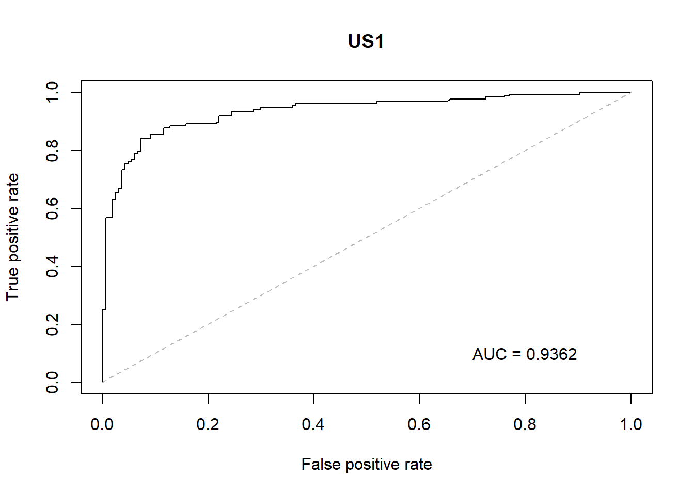
roc(HD$US2$diag_hd, lm_us2_final$fitted.values)##
## Call:
## roc.default(response = HD$US2$diag_hd, predictor = lm_us2_final$fitted.values)
##
## Data: lm_us2_final$fitted.values in 51 controls (HD$US2$diag_hd 0) < 149 cases (HD$US2$diag_hd 1).
## Area under the curve: 0.8981rocplot(HD$US2$diag_hd, lm_us2_final$fitted.values, 'US2')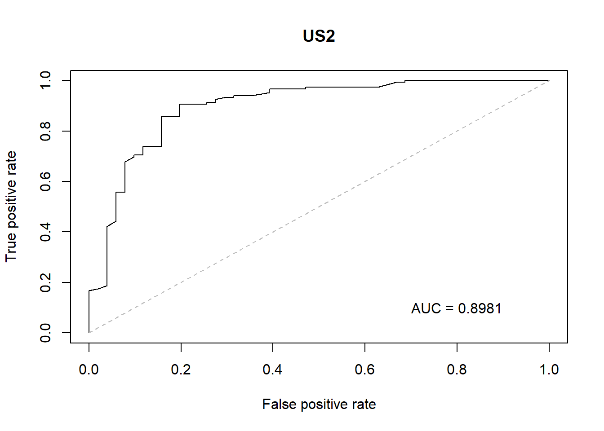
roc(HD$EU1$diag_hd, lm_EU1_final$fitted.values)##
## Call:
## roc.default(response = HD$EU1$diag_hd, predictor = lm_EU1_final$fitted.values)
##
## Data: lm_EU1_final$fitted.values in 188 controls (HD$EU1$diag_hd 0) < 106 cases (HD$EU1$diag_hd 1).
## Area under the curve: 0.9683rocplot(HD$EU1$diag_hd, lm_EU1_final$fitted.values, 'EU1')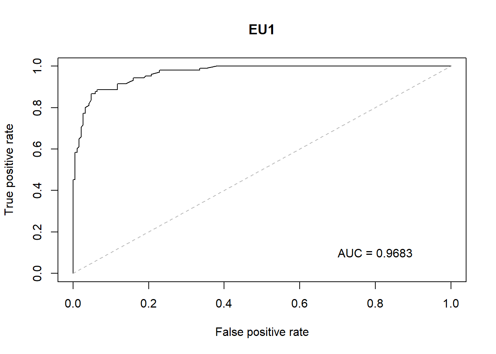
roc(HD$EU2$diag_hd, lm_EU2_final$fitted.values)##
## Call:
## roc.default(response = HD$EU2$diag_hd, predictor = lm_EU2_final$fitted.values)
##
## Data: lm_EU2_final$fitted.values in 8 controls (HD$EU2$diag_hd 0) < 115 cases (HD$EU2$diag_hd 1).
## Area under the curve: 0.9473rocplot(HD$EU2$diag_hd, lm_EU2_final$fitted.values, 'EU2')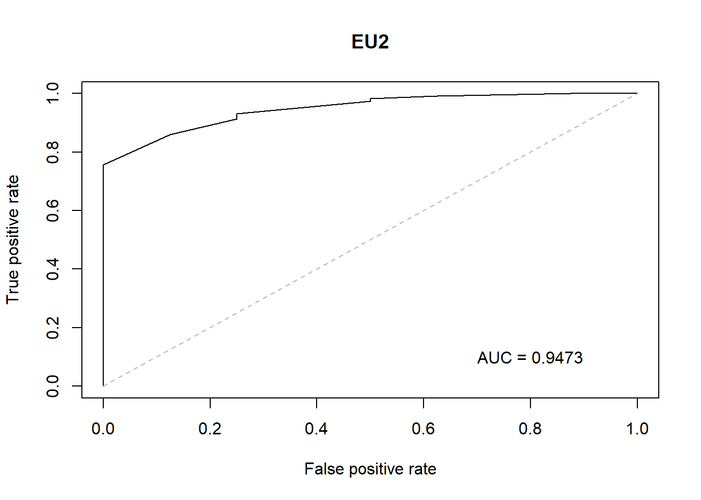
roc(HD_all$diag_hd, lm_all_final$fitted.values)##
## Call:
## roc.default(response = HD_all$diag_hd, predictor = lm_all_final$fitted.values)
##
## Data: lm_all_final$fitted.values in 411 controls (HD_all$diag_hd 0) < 509 cases (HD_all$diag_hd 1).
## Area under the curve: 0.9322rocplot(HD_all$diag_hd, lm_all_final$fitted.values, 'ALL')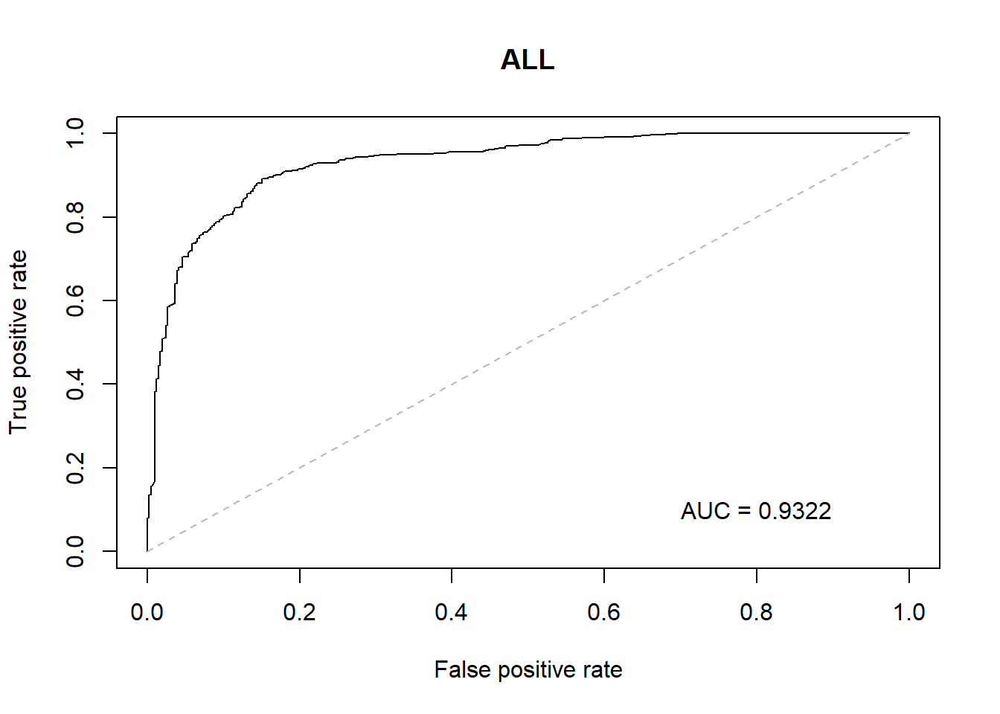
roc(HD_all$Diagnosis, lm_all_final_d$fitted.values)##
## Call:
## roc.default(response = HD_all$Diagnosis, predictor = lm_all_final_d$fitted.values)
##
## Data: lm_all_final_d$fitted.values in 411 controls (HD_all$Diagnosis 0) < 196 cases (HD_all$Diagnosis 1).
## Area under the curve: 0.8864#rocplot(HD_all$Diagnosis, lm_all_final_d$fitted.values, 'All')
#(HD_all$Diagnosis, lm_all_final_d$fitted.values)The similarity found among heart disease patients are:- • Most of them were male.
• Aged between 49 to 60.
• Have asymptomatic chest pain.
• The fasting glucose test was irrelevant.
• Resting ECG test also seemed insignificant.
• Most of them had exercise-induced angina present (absent in non-HD patients ).
• They got ‘Flat’ slope in ST-segment exercises but in a few hospitals, it seemed not significant. (have mixed result of non-HD patient)
• Most of the patients with HD get ‘reversible defect’ in the Thalassemia test.
• Have high blood pressure around (mean)134 bp. Non-HD have lower bp comparatively.
• Their max heart rate achieved on the Thallium stress test is around 127(mean, SD=24.1). It’s usually much lower than non-HD patients. • They have higher results (mean =1.26) in ST depression exercise compared to non-HD patients. It’s usually higher than 1 unit.
• Colored vessel by fluoroscopy test is significant, if the patient has heart disease then 70% of the time it will be found through this. Only 30% of heart disease did not have colored vessels in the test.
• All of the ROC curve and model were significant. • Thal, Thalanch, ST depression ecercise, ST slope peak exercise, Resting blood pressure, color Num_Major_Vessels,Thalassemia test are significant.
Since these are significant there cost can be reduced to reasonable amount.
Test<- c("cp","trestbps","fbs","restecg","thalach","exang", "oldpeak","slope","ca","thal")
cost<-c(0,0,5.20, 15.50, 102.90, 87.30, 87.30, 87.30, 100.90, 102.90)
new<- c(0, 0, 5.20, 15.50, 70, 87.3 , 60, 60, 80, 80)
costs<- data.frame(Test,cost, new)
costs## Test cost new
## 1 cp 0.0 0.0
## 2 trestbps 0.0 0.0
## 3 fbs 5.2 5.2
## 4 restecg 15.5 15.5
## 5 thalach 102.9 70.0
## 6 exang 87.3 87.3
## 7 oldpeak 87.3 60.0
## 8 slope 87.3 60.0
## 9 ca 100.9 80.0
## 10 thal 102.9 80.0Being male and in your late 40 to 60 does increases chance in having cardiovascular disease. Most of the HD patients had a asymptomatic chest pain. Patient with HD have lower max heart rate in Thallium stress test conparatively to non-HD patients. HD patients have higher blood pressure. Except in a few hospitals, the majority of them have shown fasting blood sugar, resting ECG are an insignificant test. Exercise_Induced_Angina gives mixed result hence this test can be avoided as well.
Thalanch, Resting blood pressure , ST Depression Exercise , Slope Peak Exercise ST2 =flat Num_Major_Vessels,Thalassemia6 =‘fixed defect’,Thalassemia7=‘reversible defect’ are significant test. Since these are significant there cost can be reduced to reasonable amount.
URL- Notast.netlif, https://notast.netlify.com/post/explaining-predictions-interpretable-models-logistic-regression/
URL- RPubs, https://rpubs.com/mbbrigitte/heartdisease
Rai, Sadhana. (2015). Cardiovascular Disease Dataset Exploration Using Hive and R. International Journal of Advanced Research in Computer Science and Software Engineering. Volume 5.